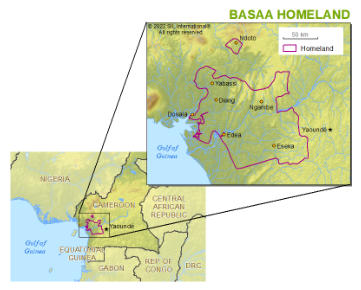
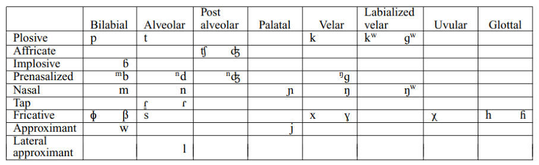
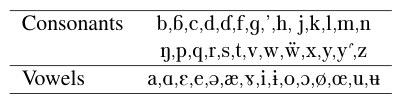
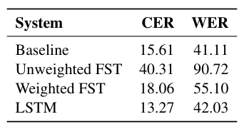

RAIL 2023Tafsiri ya mashine
Kulinganisha mbinu za ubadilishaji wa tahajia kwa Kibàsàá, lugha ya Kamerun
Tafsiri ya mashine, haijakaguliwa na binadamu. Makala asili ndiyo toleo la rejeo; sentensi zilizopigiwa mstari ni zile ambazo ukaguzi wa kiotomatiki haukuwa na uhakika nazo.
Proceedings of the Fourth workshop on Resources for African Indigenous Languages (RAIL 2023).
Tafsiri ya Ernst van Gassen (Arktos AI Lab), yenye leseni CC BY 4.0 kama makala asili. Matumizi tena yanaruhusiwa, ikiwemo ya kibiashara, kwa kutaja mwandishi. Waandishi asili hawajakagua wala kuidhinisha tafsiri hii.
Maandishi matupu ya kutumia tena, pamoja na leseni yake: Kiswahili · LESENI
Taasisi
Alexandra O’Neil, Daniel Swanson
Emmanuel Ngué Um
Robert Pugh, Francis Tyers
University of Yaoundé
Indiana University
Yaoundé, Cameroon
Bloomington, IN USA
Muhtasari
Usanifishaji wa tahajia ni hatua muhimu katika uhifadhi wa kumbukumbu za lugha na uendelezaji wa rasilimali zake. Hata hivyo, maandishi yaliyoandikwa kwa tahajia za zamani bado yana umuhimu kwa historia na maendeleo ya lugha na kwa hiyo lazima yabadilishwe kuwa tahajia sanifu. Kuhakikisha lugha inapata toleo la tahajia sanifu la maandishi yake yote yaliyorekodiwa ni muhimu katika uendelezaji wa rasilimali kwani hutoa rasilimali za ziada za kimaandishi kwa mafunzo, inasaidia mchango wa waandishi wanaotumia mifumo ya zamani ya uandishi, na hutoa taarifa kuhusu maendeleo ya lugha. Makala haya yanatathmini utendaji wa mbinu za uchakataji wa lugha asilia, hasa Finite State Transducers (FST) na mitandao ya Long Short-term Memory (LSTM), kwa ubadilishaji wa tahajia wa maandishi ya Kibàsàá kutoka tahajia ya kimisionari ya Kiprotestanti hadi tahajia sanifu ya sasa ya AGLC, kwa hitimisho kwamba LSTM zina ufanisi zaidi kwa kiasi fulani pale ambapo hakuna taarifa dhahiri za kileksika.
1 Utangulizi
Usanifishaji wa tahajia ni mchakato ambao lugha nyingi za dunia zimepitia katika historia na nyingi bado zinaendelea kuupitia. Ingawa kuna faida nyingi za usanifishaji wa mfumo wa uandishi wa lugha, unaweza pia kuleta changamoto kwa jamii za lugha. Changamoto hizi ni pamoja na mabishano kati ya wazungumzaji ambao wamezoea kutumia uwakilishi tofauti, usumbufu kutoka kwa wazungumzaji wanaohusisha lugha yao kama lugha ya mazungumzo pekee, kushughulikia na kupunguza athari za ukoloni kwa lugha na jamii, mjadala kuhusu jinsi bora ya kuwakilisha sauti katika lugha, na kusitasita katika kupitishwa kwa mfumo wa uandishi na wazungumzaji wote (Limerick, 2018).
Kama inavyorejelewa katika seti ya changamoto zinazowezekana hapo juu, jamii mara nyingi huwa na njia tofauti za kuwakilisha lugha yao kabla ya juhudi zilizoratibiwa za kutekeleza mfumo mmoja (Mosel, 2004). Ingawa moja ya malengo ya usanifishaji wa tahajia ni kuunda njia thabiti ambayo wazungumzaji wanaweza kutumia kuelewana na kuwasilisha mawazo yao wenyewe, maandiko na data yaliyoandikwa kwa tahajia zilizotumika awali yanabaki kuwa muhimu katika historia na maendeleo ya lugha. Ili kuhifadhi taarifa hii ni muhimu kubadilisha tahajia za zamani kuwa kiwango kipya. Zaidi ya hayo, ni vyema kuanza mchakato huu muda mfupi baada ya usanifishaji wa mfumo, kwani hii huongeza fursa ya kufanya kazi na wazungumzaji ambao wana ujuzi wa mifumo iliyotumika awali.
Vilevile, ubadilishaji wa tahajia za zamani kuwa kiwango cha sasa ni wa manufaa kwani baadhi ya wazungumzaji wanaweza kuwa hawako tayari kubadili kutumia kiwango kipya. Kwa kipindi fulani cha muda kufuatia kupitishwa kwa tahajia mpya, wazungumzaji wanaweza kuendelea kutumia aina mbalimbali za tahajia katika uandishi wao wenyewe, wakifuata tahajia yoyote waliyojifunza awali (Jahani, 1989). Baadhi ya wazungumzaji wanaweza kulazimika kuendelea kutumia mfumo usio wa kiwango kutokana na uhusiano wa kihisia na mfumo wa tahajia. Kwa mfano, sababu za kudumisha upendeleo wa tahajia huanzia uzoefu mzuri, kama vile kuhusisha mfumo na jinsi babu na nyanya walivyowafundisha, hadi mwitikio wa uzoefu wa kiwewe, kama vile mazingira ya shule yenye unyanyasaji wa kisaikolojia na kimwili ambapo mfumo mmoja wa uandishi ulisisitizwa (Arndt, 2019). Bila kujali sababu ya mzungumzaji kuendelea kutumia tahajia tofauti, ni jambo la kujenga kwa jamii kuhakikisha kwamba watumiaji wa tahajia mpya bado wanaweza kuelewa maandishi katika tahajia nyingine na kuendeleza mbinu ya kubadilisha maandiko haya kwa urahisi (Person, 2009).
Katika makala haya, tunachunguza na kulinganisha umuhimu wa finite-state transducers (FSTs) na mitandao ya neva ya long short-term memory (LSTMs) kwa kazi ya kubadilisha tahajia ya awali ya lugha ya Bàsàá kuwa kiwango cha sasa, kwa hitimisho kwamba LSTMs hufanya vizuri kidogo kuliko FSTs pasipo taarifa za kileksika.
2 Bàsàá
Bàsàá ni lugha ya Kibantu inayozungumzwa na takriban wazungumzaji 300,000 nchini Kamerun (Eberhard et al., 2022). Ingawa ina sifa nyingi bainifu za lugha ya Kibantu, kwa kawaida inachukuliwa kuwa na tofauti zaidi ya muundo wa silabi na unyumbufu katika ngeli ikilinganishwa na Lugha za Kibantu nyingine, kama inavyojadiliwa katika Sehemu ya 2.1. Historia ya Bàsàá pia inaelezea aina mbalimbali za mifumo ya uandishi kutoka kwa wamisionari tofauti na juhudi tofauti za usanifishaji, kama inavyoelezwa katika Sehemu ya 2.2.

Kielelezo 1: Ramani inayoonyesha maeneo ya msingi ambako Bàsàá inazungumzwa: kusini, kati na pwani ya Kamerun. (Njock, 2019)
2.1 Maelezo ya lugha
Orodha ya kifonetiki ya Bàsàá imewekwa wazi katika Makasso na Lee (2015), ambayo inajumuisha vokali 7 za kifonemiki (tazama Kielelezo 2) zenye utofautishaji wa kifupi-kirefu na konsonanti 30 (tazama Kielelezo 3). Zaidi ya hayo, Bàsàá hutumia mfumo wa toni ya juu-chini. Ingawa ni lugha ya Kibantu, inaruhusu kwa njia isiyo ya kawaida muundo wa silabi funge pamoja na muundo wa silabi wazi. Ingawa ina mfumo wa ngeli, tofauti za juu-juu kati ya ngeli hizo wakati mwingine hubatilishwa. Majina hayahitajiki kuanza na mwanzo wa konsonanti na vitenzi havihitajiki kuishia kwa vokali. Sababu hizi husababisha uanuwai mkubwa zaidi wa miundo ya silabi inayoruhusiwa katika Bàsàá ikilinganishwa na Lugha za Kibantu nyingine (Hyman, 2003).

Kielelezo 2: Orodha ya vokali katika Bàsàá (Makasso na Lee, 2015). [ɛ] na [ɔ] hutofautishwa na [o] na [e] kwa alama za matamshi katika maandishi ya kimisionari.
2.2 Historia ya Tahajia
Historia ya tahajia ya Bàsàá ina mifumo mingi ya uandishi kwani wakoloni wa Kiingereza, Kijerumani, na Kifaransa walioandika lugha hiyo walichagua mbinu tofauti za uwasilishaji. Alfabeti zilizoundwa kwa ajili ya Bàsàá, na kwa lugha nyingi za Kameruni, ziliathiriwa kimsingi na lugha za kwanza za waandishi, kwa kawaida Kifaransa, Kiingereza, au Kijerumani, na mara nyingi zilishindwa kuashiria ipasavyo tofauti muhimu katika lugha (Bird, 2001). Tahajia mbili mashuhuri zaidi zilizoanzishwa kabla ya ile ya sasa zinahusishwa na wamisionari wa Kiprotestanti na wamisionari wa Kikatoliki na zinarejelewa katika karatasi hii kama tahajia za Kiprotestanti na Kikatoliki, ambazo hakuna hata moja iliyoashiria toni.
Ingawa jaribio la kwanza la kutekeleza mfumo sanifu wa uandishi, kwa kutumia tahajia iliyotengenezwa kwa lugha ya Afrika Magharibi huko Bamako (United Nations Educational and Organization, 1966), halikufanikiwa, kamati ya kitaifa ilianzishwa ili kuunda mfumo wa uandishi ambao ungewezesha ujuzi wa kusoma na kuandika wa pan-Kameruni katika lugha zote za nchi. Kiini cha juhudi hii kilikuwa uanzishwaji wa mfumo ambao ungeweza kunasa sauti zote zenye kutofautisha katika lugha za Kameruni. Ujumuishaji wa tofauti zote ungemwezesha mzungumzaji yeyote mwenye ujuzi wa kusoma na kuandika wa lugha ya Kameruni kusoma na kutamka maneno ya maandishi katika lugha yoyote ya Kameruni, bila kujali ufahamu (Hartell, 1993).
Juhudi ya kitaifa ilifikia kilele chake katika uanzishwaji wa Alfabeti Kuu ya Lugha za Kameruni (AGLC) na Kamati ya Kitaifa ya Kuunganisha na Kuoanisha Alfabeti za Lugha za Kameruni mwaka 1979 (Maurice Tadadjeu, 1979). Herufi za alfabeti hii kwa kiasi kikubwa ni za Kilatini, na hivyo zinafanana na alfabeti za Kiingereza, Kijerumani, na Kifaransa, hata hivyo alfabeti hiyo inajumuisha alama kutoka Alfabeti ya Kifonetiki ya Kimataifa ili kuwakilisha kikamilifu orodha ya kifonetiki ya lugha za Kameruni. Alama katika AGLC kamili zimeorodheshwa katika Jedwali 1.

Kielelezo 3: Orodha ya konsonanti katika Kibàsàá (Makasso na Lee, 2015).

Jedwali 1: Alfabeti ya Lugha za Kameruni. Alfabeti ya AGLC iliundwa kufanya kazi kama alfabeti inayounganisha na inayoeleweka kwa wazungumzaji wa lugha zote za Kameruni.
Kibàsàá kinatumia kikundi kidogo cha mfumo huu kwa mujibu wa tofauti za kifonetiki za lugha hiyo. Herufi za Kilatini zinatumika pamoja na ɓ, ŋ, ɛ, na ɔ zenye akuti, gravu, na sirkumfleksi ili kuashiria toni. Ingawa tahajia hii inaungwa mkono na Chuo cha Lugha za Kameruni, tahajia za awali za kimisionari bado zinatumiwa na baadhi ya wazungumzaji na kwa ujumla zinatumika katika maandiko ya awali yaliyoandikwa katika Kibàsàá, jambo linalohitaji mbinu ya kubadilisha tahajia za kimisionari kuwa kiwango cha AGLC.
Kwa kulinganisha mifumo hiyo mitatu ya uandishi, tofauti kuu ya kwanza inapatikana katika uwekaji alama wa toni na vokali. Mifumo ya uandishi ya Kiprotestanti na Kikatoliki haiweki alama ya toni, bali hutumia alama za akuti, gravu, na sirkumfleksi kuashiria vokali tofauti. Mfumo wa Kiprotestanti unawakilisha [e] kwa kutumia alama ya akuti, é, huku [ɛ] ikiwakilishwa na e ya kawaida. Vile vile, mfumo wa Kiprotestanti hutumia ô lenye sirkumfleksi, kuashiria [o], lakini o ya kawaida katika tahajia inawakilisha [ɔ]. Kwa upande mwingine, tahajia ya Kikatoliki inaashiria [ɛ] na [ɔ] kwa è na ò, huku e na o za kawaida zikiwakilisha [e] na [o]. Hata hivyo, katika tahajia ya AGLC, alama za akuti, gravu, na sirkumfleksi hutumiwa kuwakilisha toni na ɛ na ɔ tayari zimetofautishwa katika tahajia kwa kuongezwa kwa alama ɛ na ɔ. Toni pia huwekwa alama kwenye konsonanti za nazali zenye silabi katika mfumo wa AGLC.
Konsonanti katika tahajia pia zinahitaji kuzingatiwa katika mchakato wa ubadilishaji. Sauti za [ɓ] na [ŋ] zinawakilishwa na b na ñ katika tahajia za kimisionari, huku tahajia ya AGLC ikitofautisha [b] na [ɓ] kwa herufi b na ɓ. Badala ya ñ, [ŋ] inawakilishwa na ŋ katika tahajia ya AGLC. Pamoja na konsonanti hizi, tahajia za kimisionari hunakili sauti tʃ kama tj, mfumo wa AGLC hutumia c. Sentensi moja imewasilishwa katika tahajia tatu hapa chini ili kutoa mfano wa baadhi ya tofauti katika tahajia.
AGLC: Mɛ̀ yè lɛ mɛ ɓɔl nyɔɔ̄ nì màkòò.
Protestant: Me yé le me bol nyoo ni makôô.
Catholic: Mè ye lè mè bòl nyòò ni makoo.
3 Kazi za Awali
Mazungumzo kati ya tahajia ni suala la kawaida katika lugha nyingi, na kwa hivyo idadi kadhaa ya tafiti za awali zimechunguza mbinu za kusaidia katika ubadilishaji na/au usawazishaji wa tahajia. Kazi hii inajenga juu ya utafiti uliopo unaoelezea lugha ya Bàsàá na matumizi ya uchakataji wa lugha asilia kwa lugha yenye rasilimali chache. Sehemu hii inaelezea kazi iliyopo kuhusu Bàsàá katika Sehemu ya 3.1, Finite State Transducers (FST) katika Sehemu ya 3.2, na mitandao ya Long Short-term Memory (LSTM) katika Sehemu ya 3.3. Ingawa utafiti unaohusu FST na mitandao ya LSTM katika mazingira yenye rasilimali chache ni mkubwa, sehemu hii inazingatia mifano inayoakisi kwa karibu malengo ya karatasi hii.
3.1 Utafiti kuhusu Bàsàá
Kazi iliyopo kuhusu Bàsàá imeelezea orodha ya kiisimu ya lugha (Makasso and Lee, 2015; Hyman, 2003), imetengeneza kamusi (Lemb and de Gastines, 1973), imebuni vifaa vya kujifunzia (Moreton et al., 1968), na, hivi karibuni zaidi, imewezesha ukuzaji wa rasilimali zinazounganisha mbinu za kikompyuta na NLP na Bàsàá ili kuongeza rasilimali zinazopatikana kwa ajili ya uhifadhi, kama vile korasi ya usemi ya lugha mbili iliyotengenezwa kusaidia katika unukuzi wa kifonetiki otomatiki (Hamlaoui et al., 2018).
Nikitin et al. (2022) wanashughulikia kazi ya ubadilishaji wa tahajia katika Kibàsàá kwa kutumia Bidirectional Encoder Representations from Transformers (BERT), ambayo mara nyingi hufanya vizuri kutokana na kiasi kikubwa cha rasilimali na mafunzo yaliyowekwa kwenye modeli. Hata hivyo, kwa kazi hii, BERT iliweza tu kushinda msingi baada ya uchakataji wa awali wa kina wa maandishi. Umuhimu wa uchakataji wa awali wa kina wa maandishi na utendaji bora kidogo tu kuliko msingi unapendekeza kuwa BERT haifai vizuri kwa kazi hii.
3.2 Transducers za Hali ya Kikomo
Finite State Transducers (FST) hufanya kazi kama mtafsiri kati ya seti ya mifuatano ya pembejeo na seti ya mifuatano ya matokeo. Katika kesi ya lugha, mfuatano wa pembejeo unaweza kutumia kanuni za kiisimu na kutoa matokeo yanayozingatia kanuni hizo. Kwa vile pembejeo ya FST inategemea kanuni za kiisimu, modeli mara nyingi hufanya vizuri katika mazingira yenye rasilimali chache, kwani modeli hazitegemei kiasi kikubwa cha data ya mafunzo au rasilimali za kikompyuta. Ingawa modeli za FST zinahitaji kiasi fulani cha juhudi za kiisimu au kikompyuta kujenga, zana mbalimbali zimeundwa ambazo huendesha kiotomatiki sehemu mbalimbali za mchakato ili kusaidia kupunguza mipaka hii (Khanna et al., 2021), ingawa utendaji wa modeli za FST hunufaika sana kutokana na uzalishaji wa kanuni za kina, mahususi kwa lugha.
Kwa ujumla, FST hazibainishi lazima uwiano wa kipekee kati ya mifuatano ya pembejeo na pato, jambo ambalo linaweza kusababisha matatizo kwa kazi kama vile ubadilishaji wa tahajia ambazo kwa kawaida zinahitaji pato moja. Hili linaweza kushughulikiwa kwa kuongeza sheria za ziada ili kuzuia transducer. Hata hivyo, ikiwa kubainisha sheria zinazofaa ni vigumu na korasi inapatikana, linaweza pia kushughulikiwa kwa kuongeza uzani, ambao ni alama zinazoweza kutumika ama kwa jozi ya neno zima la pembejeo na pato au kwa uwiano wa sehemu ndogo ya neno. Kisha, kwa pembejeo fulani, kila pato lina uzani sawa na jumla ya uzani wote unaotumika unaotokana na korasi, huku umbo lenye jumla ya chini kabisa likitolewa.
FST zimetekelezwa katika mazingira mengi yenye rasilimali chache, na pia kwa matumizi ya ubadilishaji wa tahajia, transliteresheni, na usawazishaji wa maandishi. Washington et al. (2021) walitengeneza transducer kusaidia katika ubadilishaji wa tahajia na uchanganuzi wa kimofolojia wa Kizapotec na wakagundua kwamba hata transducer isiyokamilika inaweza kutoa matokeo chanya. Juhudi zinazofanana zinatumia FST kutengeneza jenereta na kichanganuzi cha kimofolojia huku zikishughulikia wakati huo huo suala la alama za matamshi zinazokosekana (Alkhairy et al., 2020), zikionyesha upanuzi rahisi wa FST kuunda rasilimali zaidi kwa lugha. Manohar et al. (2022) wanapanua matumizi ya FST kwa programu za ubadilishaji wa maandishi kuwa usemi (TTS) katika mazingira yenye rasilimali chache, wakitengeneza modeli inayobadilisha kati ya fonimu za Kimalayalam na grafimu.
Ingawa matumizi ya FST katika mazingira yenye rasilimali chache yamethibitishwa vizuri, ujumuishaji wa toni umeonekana kuwa mgumu. Ngué Um et al. (2022) walijenga FST kwa Ewondo, lugha ya Kameruni. Katika utafiti huu, hali ya utata ya alama za toni zilizounganishwa dhidi ya zinazounganisha inaleta ugumu kwa kichanganuzi. Ingawa alama zote zilizounganishwa na zinazochanganya zinaweza kuchambuliwa na FST, hii inasababisha makosa katika uundaji wa kimorfolojia. Upanuzi wa FST kwa Bàsàá pia ungehitaji kushughulikia suala hili.
3.3 Mitandao ya Kumbukumbu ya Muda Mrefu na Muda Mfupi (Long Short-Term Memory Networks)
LSTM ni usanifu wa mtandao wa neva unaojirudia unaoruhusu taarifa kuhusu utegemezi wa muda mrefu kujumuishwa, ukitoa muktadha wa ziada kwa uzalishaji wa matokeo. Mitandao ya LSTM imetumika kwa kazi nyingi za ujifunzaji wa kina, kama vile tafsiri ya mashine, utambuzi wa herufi kwa njia ya kiopitiki (OCR), na utambuzi wa usemi.
LSTM zimeunganishwa na kazi za OCR kusaidia lugha katika uwekaji kidijitali na usawazishaji wa tahajia wa maandishi ya kihistoria. Azawi et al. (2013) waligundua kuwa LSTM zinafanya vizuri kwa ubadilishaji wa maandishi ya kihistoria ya Kijerumani kwani zinaweza kushughulikia mifano isiyoonekana. Vivyo hivyo, Simistira et al. (2015) waligundua kutumia LSTM kwa OCR kunatoa kiwango cha makosa ya herufi cha chini kuliko mbinu zinazoongoza za OCR kwa hati ya Kigiriki ya polytonic.
Zaidi ya hayo, LSTM zimepata umaarufu hivi karibuni kwa manufaa yake katika kazi za TTS, kama vile ubadilishaji wa grafimu-hadi-fonimu. Adriana (2019), Liu et al. (2018), na Behbahani et al. (2016) walitekeleza kwa mafanikio mifano ya LSTM kwa ubadilishaji wa grafimu-hadi-fonimu katika Kiromania, Kimongolia, na Kiajemi.
4 Mbinu
Karatasi hii inalinganisha Usahihi wa Finite State Transducer (FST), FST yenye uzito, na mfano wa Long Short-term Memory (LSTM) kwa kazi ya ubadilishaji wa tahajia wa Bàsàá. Sehemu ya 4.1 inaelezea data ambayo mifano ilifunzwa, Sehemu ya 4.2 inaelezea kipimo rahisi cha msingi kilichotumika kwa ulinganisho, Sehemu ya 4.3 inaelezea matumizi ya FST isiyo na uzito, Sehemu ya 4.4 inaelezea kwa kina utekelezaji wa FST yenye uzito, na Sehemu ya 4.5 inatoa muhtasari wa mfano wa LSTM.
4.1 Data
Mbinu katika utafiti huu zinatumia korasi ya maandishi inayojumuisha sentensi 12,000 katika tahajia ya Kiprotestanti pamoja na transliteresheni katika tahajia ya AGLC. Kati ya sentensi hizi, 10,000 zinatumika kwa mafunzo, 1,000 kwa uthibitishaji, na 1,000 kwa upimaji. Uchakataji wa awali wa maandishi ulihusisha kubadilisha herufi kuwa ndogo.
4.2 Msingi
Msingi hutafuta sentensi lengwa kwa tafsiri inayotokea mara nyingi zaidi ya neno chanzi na kubadilisha neno chanzi na tokeni hiyo. Iwapo neno chanzi halionekani katika data, neno chanzi linatolewa katika umbo lake la asili bila ubadilishaji. Msingi hapa ni mkabala rahisi kwa tatizo, lakini unawakilisha ukosefu wa sasa wa kazi iliyopo kuhusu ubadilishaji wa tahajia katika lugha.
4.3 FST Isiyo na Uzani
FST isiyo na uzito inajumuisha seti ya ramani za herufi zilizokusanywa kwa kutumia mkusanyaji wa leksimu Lexd (Swanson and Howell, 2021) ambayo inajumuisha kila jozi ya herufi chanzi na lengwa zilizopatikana katika data ya mafunzo. Kuweka ramani kila herufi kivyake na bila muktadha huunda idadi kubwa ya maumbo ya matokeo, ambayo tunayatatua kwa kuchagua umbo moja la matokeo kwa nasibu. Zaidi ya hayo, tuliongeza kanuni nne zinazozuia matokeo katika hali ambapo muktadha wa kifonolojia hauna utata. Hasa, kwamba nazali hazitawahi kuwa na alama ya toni katika tahajia ya AGLC ikiwa zinapotangulia vokali (hizi ni kanuni 3, moja kwa kila m, n, na ŋ), na kwamba pale ambapo tahajia ya kimisionari ina tj, tahajia ya AGLC daima itakuwa na c (tofauti na kubadilisha t na j kando kama tj).
4.4 FST yenye Uzani
Ambapo FST isiyo na uzani inachukulia kila ramani kuwa na uwezekano sawa, FST yenye uzani huweka uzani kwa kila njia ambayo imeonekana katika data ya mafunzo, huku jozi za chanzo-lengo zinazojitokeza mara nyingi zaidi zikipokea uzani wa chini (bora). Kisha, badala ya kuchagua kwa nasibu, matokeo yenye uzani wa chini kabisa hutumika.
4.5 Mfano wa neva wa seq2seq
Kufuatia kazi za awali ambazo zimeonyesha kwamba usanifu wa neva wa seq2seq unaotegemea herufi hufanya vizuri kwa usawazishaji na ubadilishaji wa tahajia (Rosca na Breuel, 2016; Orife, 2018), tulifunza mfano wa encoder-decoder wenye umakini wa jumla (Luong et al., 2015) ili kubadilisha tahajia za kimisionari kuwa tahajia ya AGLC. Encoder na decoder zote ni mitandao ya kumbukumbu ya muda mfupi mrefu yenye mwelekeo mmoja (Hochreiter na Schmidhuber, 1997) inayojumuisha tabaka 2 za vitengo 1,000 vya siri kila moja. Tulitumia maktaba ya OpenNMT-py (Klein et al., 2020) kufunza modeli na kuzalisha utabiri kwenye seti za data zilizotengwa.
5 Matokeo
Tunalinganisha mifumo minne kwa kutumia viwango vya makosa ya maneno na herufi (WER na CER). WER na CER hukokotolewa kiotomatiki kwa kulinganisha matokeo ya kila mfumo na matokeo ya faili lengwa. Kufuatia uwasilishaji wa WER na CER kwa kila mfumo, tunatoa mifano ya matokeo kutoka kwa kila modeli. Maelezo kuhusu tofauti za uwakilishi wa tahajia kwa maandishi ya chanzo na lengwa yanaweza kupatikana katika Sehemu ya 2.2.
5.1 Viwango vya Makosa ya Maneno na Herufi
Matokeo ya mifumo yote isipokuwa FST isiyo na uzani yalikuwa yanafanana kiasi, huku modeli ya msingi ikifanya vizuri zaidi kuliko mifumo yote miwili ya FST na sawa na modeli ya seq2seq. Modeli ya seq2seq ilipata kiwango bora cha makosa ya herufi, wakati msingi unaonyesha kiwango bora kidogo cha makosa ya maneno. Hili linaweza kuelezewa na ukweli kwamba msingi hufanya kazi katika kiwango cha neno. Kwa hivyo, kosa husababisha kuchagua umbo lisilo sahihi la neno, ambalo huenda likawa na herufi nyingi ambazo ni tofauti na umbo sahihi la neno. Mfano wa seq2seq, kwa upande mwingine, unatabiri katika kiwango cha herufi, na unaweza kufanya kosa la herufi moja tu katika neno, kama vile alama ya toni iliyokosekana.

Jedwali la 2: Ulinganisho kati ya mifano 4.
5.2 Uchambuzi wa Makosa
Ili kuelewa vizuri utendaji wa mifano hii, tunawasilisha mifano ya matokeo ya mifano kwa sentensi tatu tofauti na kujadili ni makosa gani ni ya kawaida kwa kila moja ya mifano. Mifano hiyo imechukuliwa kutoka kwa matokeo ya seti ya maendeleo kwa kila moja ya mifano.

Jedwali 3
Katika sentensi katika Jedwali la 3, tunaona kwamba FST zina mwelekeo wa kuzalisha kupita kiasi herufi ŋ wakati tahajia ya chanzo ina n. Zaidi ya hayo, inaonyesha kwamba mtandao wa LSTM unafanikiwa katika kuzalisha toni ya nazali ya silabi. Ingawa msingi mara nyingi unaweza kutabiri toni kwenye nazali ya silabi, tokeni hii haipo katika data ya mafunzo, kwa hivyo msingi unatoa tu tokeni asilia.
Sentensi katika Jedwali la 4 zinaonyesha kwamba mifumo mingi inaweza kuelewa kwamba akuti katika tahajia ya chanzo haionyeshi akuti kwenye tahajia lengwa. Hata hivyo, FST isiyo na uzani inaelekea kuongeza alama za akuti hata kukiwa hakuna alama za akuti katika umbo lengwa. Kwa ujumla, tunaona LSTM ikifanya vizuri katika ugawaji wa toni na herufi katika mfano huu, huku msingi ukiwa karibu mkamilifu isipokuwa toni kwenye tokeni ya pili.

Jedwali 4

Jedwali 5
Katika sentensi za Jedwali la 5, ingawa LSTM inakaribia, haiwezi kutambua toni inayopanda katika tokeni ya kwanza na inaashiria toni ya tokeni ya pili kama ya kati. FST zenye uzani na zisizo na uzani zinatabiri herufi kwa usahihi, lakini kwa njia nyingine hazilingani kabisa na alama za toni, ingawa ni dhahiri kwamba FST yenye uzani inazidi FST isiyo na uzani.
6 Hitimisho
Matokeo ya karatasi hii yanachangia mjadala kuhusu faida linganishi za mbinu za NLP dhidi ya misingi rahisi zaidi katika mazingira yenye rasilimali chache. Msingi unazidi FST zisizo na uzani na zenye uzani na mtandao wa LSTM kuhusiana na WER. Kwa kuwa Kibàsàá ni lugha ya toni, mabadiliko katika toni ya herufi moja yanaweza kuunda jozi ndogo na hivyo WER ni kipimo halisi zaidi cha kutathmini manufaa ya modeli. Hata hivyo, msingi huo unatoa tu neno asilia kwa tokeni zozote zisizo za msamiati (OOV), ikimaanisha kuwa utendaji wa msingi huo unaathiriwa sana na tokeni za OOV. Ingawa hii ina athari ndogo kwenye seti hii ya data, seti ya data yenye tokeni zaidi za OOV ingefanya vibaya zaidi.
Ingawa msingi huo unafanya vizuri kwenye tahajia ya Kiprotestanti, huenda ungefanya vizuri zaidi kwenye tahajia ya Kikatoliki kwani hutumia alama za lafudhi gravu badala ya alama za lafudhi akuti. Ingawa tahajia ya Kikatoliki na AGLC hutumia alama za grave kuashiria vitu tofauti, uwepo wa alama za grave katika lengwa una uwezekano mkubwa zaidi kuliko alama za acute, ambazo huonekana tu wakati wa kuchanganua toni za kupanda na kushuka kwenye vokali ndefu. Mbinu ya kushughulikia tokeni za OOV kwa hivyo ingefanya vizuri zaidi kwa maandishi chanzi yaliyoandikwa katika tahajia ya Kikatoliki, kwani uwezekano wa kwa bahati kuwa na matokeo yanayolingana na umbo la ingizo ni mkubwa zaidi wakati tahajia chanzi inapotumia alama za gravu.
Katika karatasi hii, FST zisizo na uzani na zenye uzani ziliandikwa kwa kutumia kanuni ndogo sana za kiisimu, jambo linalothibitishwa na utendaji wao duni kiasi. FST yenye uzani ilipunguza sana athari ya ukosefu wa kanuni za kina, lakini ingeweza bado kufaidika wazi kutokana na nyongeza yake.
Karatasi hii inawasilisha uchunguzi wa awali wa matumizi ya FST na mitandao ya LSTM kwenye mada ya ubadilishaji wa tahajia. Ingawa msingi rahisi unafanya vizuri kwa kushangaza kwa seti hii ya data, tunaamini kwamba utendaji unaolinganishwa wa FST yenye uzani na mtandao wa LSTM unatia matumaini na unahitaji maendeleo zaidi ya modeli hizi, hasa ujumuishaji wa sheria zaidi za kiisimu kwa FST yenye uzani na uongezaji wa data ya mafunzo kwa mtandao wa LSTM.
Mapungufu
Karatasi hii inajaribu kutoa kauli pana zaidi kuhusu utumikaji wa mbinu za sasa za NLP kwa ubadilishaji wa maandishi kwa kujadili matokeo ya modeli hizi kwenye Bàsàá. Kesi ya Bàsàá ni changamoto kwani uwakilishaji wa toni ni mgumu kwa modeli nyingi. Hata hivyo, utafiti huu bado unanufaika kutokana na tahajia ya lugha yenye msingi wa kialfabeti wa Kirumi na rasilimali zinazopatikana kwa lugha zenye tahajia ya kialfabeti yenye msingi wa Kilatini. Zaidi ya hayo, Bàsàá hutumia tahajia wazi ambayo pia hurahisisha mbinu za kiotomatiki za ubadilishaji. Matokeo na changamoto nyingine huenda yakajitokeza wakati wa kutumia modeli hizi kwa lugha inayotumia tahajia isiyo na msingi wa Kilatini, isiyo ya kialfabeti, na/au isiyo wazi.
Kwa kuwa mradi huu unakusudiwa kuwasilisha hatua ya kuanzia kwa utafiti uliopanuliwa kuhusu ubadilishaji wa tahajia, tumeanza kwa kutoa ulinganisho wa jumla na uchambuzi mfupi wa makosa. Hata hivyo, tunapanga kutekeleza uchanganuzi wa makosa wenye utaratibu zaidi ili kuongoza kazi ya baadaye. Uchanganuzi wa sasa wa makosa unaangazia baadhi ya mifumo inayozingatiwa katika data, lakini mapitio ya kina zaidi ya matokeo yatasaidia katika uundaji wa mfumo wa sasa wa Bàsàá.
Taarifa ya Maadili
Motisha ya kazi hii ni kulinganisha mbinu za sasa za NLP katika mazingira ya rasilimali chache na kujadili jinsi mifumo tofauti inavyoweza kutumika katika miktadha tofauti kulingana na matokeo, ikichangia kwa ujumla katika mjadala kuhusu jinsi mbinu za NLP zinavyoweza kutumika kunufaisha jamii za lugha na kusaidia uundaji wa rasilimali zaidi za kiisimu. Ingawa matumaini ni kuunga mkono jamii ya lugha, ujumuishaji wa mbinu za kikompyuta pia unaleta hatari ya ugeuzwaji lugha kuwa bidhaa na kunyang'anywa mali miliki ya jamii. Utafiti huu unawasilishwa kwa imani kwamba manufaa ya sasa yanayohusiana na matumizi ya utafiti huu yanazidi hatari hii.
Shukrani
Utafiti huu uliungwa mkono kwa sehemu na Lilly Endowment, Inc., kupitia msaada wake kwa Indiana University Pervasive Technology Institute.
Marejeo
STAN Adriana. 2019. Input encoding for sequence-to-sequence learning of romanian grapheme-to-phoneme conversion. In 2019 International Conference on Speech Technology and Human-Computer Dialogue (SpeD), pages 1-6. IEEE.
Maha Alkhairy, Afshan Jafri, and David A Smith. 2020. Finite state machine pattern-root arabic morphological generator, analyzer and diacritizer. In Proceedings of the Twelfth Language Resources and Evaluation Conference, pages 3834-3841.
Jochen S Arndt. 2019. Engineered zuluness: Language, education, and ethnic identity in south africa, 1835-1990. The Journal of the Middle East and Africa, 10(3):211-235.
Mayce Al Azawi, Muhammad Zeshan Afzal, and Thomas M Breuel. 2013. Normalizing historical orthography for ocr historical documents using lstm. In Proceedings of the 2nd International Workshop on Historical Document Imaging and Processing, pages 80-85.
Yasser Mohseni Behbahani, Bagher Babaali, and Mussa Turdalyuly. 2016. Persian sentences to phoneme sequences conversion based on recurrent neural networks. Open Computer Science, 6(1):219-225.
Steven Bird. 2001. Orthography and identity in cameroon. Written Language & Literacy, 4(2):131-162.
David M. Eberhard, Gary F. Simons, and Charles D. Fennig. 2022. Ethnologue: Languages of the World, twenty-fifth edition. SIL International.
Fatima Hamlaoui, Emmanuel-Moselly Makasso, Markus Müller, Jonas Engelmann, Gilles Adda, Alex Waibel, and Sebastian Stüker. 2018. BUL-Basaa: A bilingual basaa-French speech corpus for the evaluation of language documentation tools. In Proceedings of the Eleventh International Conference on Language Resources and Evaluation (LREC 2018), Miyazaki, Japan. European Language Resources Association (ELRA).
Rhonda L. Hartell. 1993. Alphabets of africa. SIL International.
Sepp Hochreiter and Jürgen Schmidhuber. 1997. Long short-term memory. Neural computation, 9(8):1735-1780.
Larry M Hyman. 2003. Basaá (a43). The Bantu languages, pages 257-282.
Carina Jahani. 1989. Standardization and orthography in the Balochi language. Ph.D. thesis, Acta Universitatis Upsaliensis.
Tanmai Khanna, Jonathan N Washington, Francis M Tyers, Sevilay Bayatlı, Daniel G Swanson, Tommi A Pirinen, Irene Tang, and Hèctor Alòs i Font. 2021. Recent advances in apertium, a free/open-source rule-based machine translation platform for low-resource languages. Machine Translation, 35(4):475-502.
Guillaume Klein, François Hernandez, Vincent Nguyen, and Jean Senellart. 2020. The opennmt neural machine translation toolkit: 2020 edition. In Proceedings of the 14th Conference of the Association for Machine Translation in the Americas (Volume 1: Research Track), pages 102-109.
Pierre Lemb and François de Gastines. 1973. Dictionnaire basaá-français, avec un préface par meinrad hebga edition. Collège Libermann, Douala.
Nicholas Limerick. 2018. Kichwa or quichua? competing alphabets, political histories, and complicated reading in indigenous languages. Comparative Education Review, 62(1):103-124.
Zhinan Liu, Feilong Bao, and Guanglai Gao. 2018. Mongolian grapheme to phoneme conversion by using hybrid approach. In Natural Language Processing and Chinese Computing: 7th CCF International Conference, NLPCC 2018, Hohhot, China, August 26-30, 2018, Proceedings, Part I 7, pages 40-50. Springer.
Minh-Thang Luong, Hieu Pham, and Christopher D Manning. 2015. Effective approaches to attention-based neural machine translation. arXiv preprint arXiv:1508.04025.
Emmanuel-Moselly Makasso and Seunghun J. Lee. 2015. Basaá. Journal of the International Phonetic Association, 45(1):7179.
Kavya Manohar, AR Jayan, and Rajeev Rajan. 2022. Mlphon: A multifunctional grapheme-phoneme conversion tool using finite state transducers. IEEE Access, 10:97555-97575.
Etienne Sadembouo Maurice Tadadjeu. 1979. Alphabet général des langues camerounaises / General Alphabet of Cameroon Languages. Université de Yaoundé, SIL Internationale, University of Yaoundé, SIL International.
Rebecca L Moreton et al. 1968. Cameroon basaa. Inspection copy available from Foreign Languages Program, Center for Applied Linguistics.
Ulrike Mosel. 2004. Dictionary making in endangered speech communities. Language documentation and description, 2:39-54.
Emmanuel Ngué Um, Émilie Eliette, Caroline Ngo Tjomb Assembe, and Francis Morton Tyers. 2022. Developing a rule-based machine-translation system, ewondo-french-ewondo. International Journal of Humanities and Arts Computing, 16(2):166-181.
Ilya Nikitin, Brian O'Connor, and Anastasia Safonova. 2022. Tone prediction and orthographic conversion for basaa. arXiv preprint arXiv:2210.06986.
Pierre Emmanuel. Njock. 2019. àsàa - French - English - German Dictionary. Dallas: Webonary.org.
Iroro Orife. 2018. Attentive sequence-to-sequence learning for diacritic restoration of yorùbá language text. In Interspeech.
Kirk R Person. 2009. Heritage scripts, technical transcriptions, and practical orthographies: a middle path towards educational excellence and cultural preservation for thailands ethnic minority languages. In Proceedings from the international conference on national language policy: Language diversity for national unity.
Mihaela Rosca and Thomas Breuel. 2016. Sequence-to-sequence neural network models for transliteration. arXiv preprint arXiv:1610.09565.
Fotini Simistira, Adnan Ul-Hassan, Vassilis Papavassiliou, Basilis Gatos, Vassilis Katsouros, and Marcus Liwicki. 2015. Recognition of historical greek polytonic scripts using lstm networks. In 2015 13th International Conference on Document Analysis and Recognition (ICDAR), pages 766-770. IEEE.
Daniel Swanson and Nick Howell. 2021. Lexd: A finite-state lexicon compiler for non-suffixational morphologies. In Mika Hämäläinen, Niko Partanen, and Khalid Alnajjar, editors, Multilingual Facilitation. University of Helsinki Library.
Scientific United Nations Educational and Cultural Organization. 1966. Meeting of a group of experts for the unification of alphabets of national languages. Bamako, Mali, 28 February 5 March 1966. Final report. United Nations Educational, Scientific and Cultural Organization, UNESCO.
Jonathan Washington, Felipe Lopez, and Brook Lillehaugen. 2021. Towards a morphological transducer and orthography converter for western tlacolula valley zapotec. In Proceedings of the First Workshop on Natural Language Processing for Indigenous Languages of the Americas, pages 185-193.
English na Kiswahili
Comparing methods of orthographic conversion for Bàsàá, a language of Cameroon
Kulinganisha mbinu za ubadilishaji wa tahajia kwa Kibàsàá, lugha ya Kamerun
Affiliations
Alexandra O’Neil, Daniel Swanson
Emmanuel Ngué Um
Robert Pugh, Francis Tyers
University of Yaoundé
Indiana University
Yaoundé, Cameroon
Bloomington, IN USA
Taasisi
Alexandra O’Neil, Daniel Swanson
Emmanuel Ngué Um
Robert Pugh, Francis Tyers
University of Yaoundé
Indiana University
Yaoundé, Cameroon
Bloomington, IN USA
Abstract
Muhtasari
Orthographic standardization is a milestone in a language's documentation and the development of its resources. However, texts written in former orthographies remain relevant to the language's history and development and therefore must be converted to the standardized orthography. Ensuring a language has access to the orthographically standardized version of all of its recorded texts is important in the development of resources as it provides additional textual resources for training, supports contribution of authors using former writing systems, and provides information about the development of the language. This paper evaluates the performance of natural language processing methods, specifically Finite State Transducers and Long Short-term Memory networks, for the orthographical conversion of Bàsàá texts from the Protestant missionary orthography to the now-standard AGLC orthography, with the conclusion that LSTMs are somewhat more effective in the absence of explicit lexical information.
Usanifishaji wa tahajia ni hatua muhimu katika uhifadhi wa kumbukumbu za lugha na uendelezaji wa rasilimali zake. Hata hivyo, maandishi yaliyoandikwa kwa tahajia za zamani bado yana umuhimu kwa historia na maendeleo ya lugha na kwa hiyo lazima yabadilishwe kuwa tahajia sanifu. Kuhakikisha lugha inapata toleo la tahajia sanifu la maandishi yake yote yaliyorekodiwa ni muhimu katika uendelezaji wa rasilimali kwani hutoa rasilimali za ziada za kimaandishi kwa mafunzo, inasaidia mchango wa waandishi wanaotumia mifumo ya zamani ya uandishi, na hutoa taarifa kuhusu maendeleo ya lugha. Makala haya yanatathmini utendaji wa mbinu za uchakataji wa lugha asilia, hasa Finite State Transducers (FST) na mitandao ya Long Short-term Memory (LSTM), kwa ubadilishaji wa tahajia wa maandishi ya Kibàsàá kutoka tahajia ya kimisionari ya Kiprotestanti hadi tahajia sanifu ya sasa ya AGLC, kwa hitimisho kwamba LSTM zina ufanisi zaidi kwa kiasi fulani pale ambapo hakuna taarifa dhahiri za kileksika.
1 Introduction
1 Utangulizi
Orthographic standardization is a process that many languages of the world have undergone throughout history and many are still undergoing. Although there are numerous benefits to the standardization of a language's writing system, it can also present challenges for language communities. These challenges include contention between speakers that are used to using different representations, discomfort from speakers that relate to their language solely as an oral language, addressal and mitigation of the impact of colonialism on the language and community, debate about how to best represent sounds in the language, and hesitance in adoption of the writing system by all speakers (Limerick, 2018).
Usanifishaji wa tahajia ni mchakato ambao lugha nyingi za dunia zimepitia katika historia na nyingi bado zinaendelea kuupitia. Ingawa kuna faida nyingi za usanifishaji wa mfumo wa uandishi wa lugha, unaweza pia kuleta changamoto kwa jamii za lugha. Changamoto hizi ni pamoja na mabishano kati ya wazungumzaji ambao wamezoea kutumia uwakilishi tofauti, usumbufu kutoka kwa wazungumzaji wanaohusisha lugha yao kama lugha ya mazungumzo pekee, kushughulikia na kupunguza athari za ukoloni kwa lugha na jamii, mjadala kuhusu jinsi bora ya kuwakilisha sauti katika lugha, na kusitasita katika kupitishwa kwa mfumo wa uandishi na wazungumzaji wote (Limerick, 2018).
As referenced in the set of potential challenges above, communities often have differing means of representing their language prior to the coordinated effort to implement a uniform system (Mosel, 2004). While one of the goals of orthographic standardization is to create a consistent medium that speakers can use to understand one another and communicate their own thoughts, texts and data written in formerly used orthographies remain relevant in both the history and development of the language. To preserve this information it is necessary to convert former orthographies to the new standard. Furthermore, it is preferable to begin this process shortly following the standardization of the system, as this increases opportunity to work with speakers that are knowledgeable in the previously used systems.
Kama inavyorejelewa katika seti ya changamoto zinazowezekana hapo juu, jamii mara nyingi huwa na njia tofauti za kuwakilisha lugha yao kabla ya juhudi zilizoratibiwa za kutekeleza mfumo mmoja (Mosel, 2004). Ingawa moja ya malengo ya usanifishaji wa tahajia ni kuunda njia thabiti ambayo wazungumzaji wanaweza kutumia kuelewana na kuwasilisha mawazo yao wenyewe, maandiko na data yaliyoandikwa kwa tahajia zilizotumika awali yanabaki kuwa muhimu katika historia na maendeleo ya lugha. Ili kuhifadhi taarifa hii ni muhimu kubadilisha tahajia za zamani kuwa kiwango kipya. Zaidi ya hayo, ni vyema kuanza mchakato huu muda mfupi baada ya usanifishaji wa mfumo, kwani hii huongeza fursa ya kufanya kazi na wazungumzaji ambao wana ujuzi wa mifumo iliyotumika awali.
Additionally, conversion of former orthographies into the current standard is beneficial since some speakers may not be willing to switch to the new standard. For a period of time following the adoption of the new orthography, speakers may continue to use a variety of orthographies in their own writing, following whichever orthography they previously learned (Jahani, 1989). Some speakers may be compelled to continue to use a non-standard system due to an emotional attachment to an orthographic system. For example, reasons for maintaining an orthographic preference range from positive experience, such as associating a system with how one's grandparents taught them, to a reaction to a traumatic experience, such as psychologically and physically abusive school environments where one writing system was emphasized (Arndt, 2019). Regardless of a speaker's reason for continuing use of a different orthography, it is constructive to the community to ensure that users of the new orthography are still able to understand writings in other orthographies and develop a method to easily convert these texts (Person, 2009).
Vilevile, ubadilishaji wa tahajia za zamani kuwa kiwango cha sasa ni wa manufaa kwani baadhi ya wazungumzaji wanaweza kuwa hawako tayari kubadili kutumia kiwango kipya. Kwa kipindi fulani cha muda kufuatia kupitishwa kwa tahajia mpya, wazungumzaji wanaweza kuendelea kutumia aina mbalimbali za tahajia katika uandishi wao wenyewe, wakifuata tahajia yoyote waliyojifunza awali (Jahani, 1989). Baadhi ya wazungumzaji wanaweza kulazimika kuendelea kutumia mfumo usio wa kiwango kutokana na uhusiano wa kihisia na mfumo wa tahajia. Kwa mfano, sababu za kudumisha upendeleo wa tahajia huanzia uzoefu mzuri, kama vile kuhusisha mfumo na jinsi babu na nyanya walivyowafundisha, hadi mwitikio wa uzoefu wa kiwewe, kama vile mazingira ya shule yenye unyanyasaji wa kisaikolojia na kimwili ambapo mfumo mmoja wa uandishi ulisisitizwa (Arndt, 2019). Bila kujali sababu ya mzungumzaji kuendelea kutumia tahajia tofauti, ni jambo la kujenga kwa jamii kuhakikisha kwamba watumiaji wa tahajia mpya bado wanaweza kuelewa maandishi katika tahajia nyingine na kuendeleza mbinu ya kubadilisha maandiko haya kwa urahisi (Person, 2009).
In this paper, we investigate and compare the usefulness of finite-state transducers (FSTs) and long short-term memory neural networks (LSTMs) for the to the task of converting a prior orthography for the Bàsàá language to the current standard, with the conclusion that LSTMs slightly outperform FSTs in the absence of lexical information.
Katika makala haya, tunachunguza na kulinganisha umuhimu wa finite-state transducers (FSTs) na mitandao ya neva ya long short-term memory (LSTMs) kwa kazi ya kubadilisha tahajia ya awali ya lugha ya Bàsàá kuwa kiwango cha sasa, kwa hitimisho kwamba LSTMs hufanya vizuri kidogo kuliko FSTs pasipo taarifa za kileksika.
2 Bàsàá
2 Bàsàá
Bàsàá is a Bantu language spoken by approximately 300,000 speakers in Cameroon (Eberhard et al., 2022). While it has many characteristic features of a Bantu language, it is commonly perceived to have more syllable structure variation and flexibility in noun classes when compared with other Bantu languages, as discussed in Section 2.1. The history of Bàsàá also accounts for a variety of writing systems from different missionaries and different standardization efforts, as outlined in Section 2.2.
Bàsàá ni lugha ya Kibantu inayozungumzwa na takriban wazungumzaji 300,000 nchini Kamerun (Eberhard et al., 2022). Ingawa ina sifa nyingi bainifu za lugha ya Kibantu, kwa kawaida inachukuliwa kuwa na tofauti zaidi ya muundo wa silabi na unyumbufu katika ngeli ikilinganishwa na Lugha za Kibantu nyingine, kama inavyojadiliwa katika Sehemu ya 2.1. Historia ya Bàsàá pia inaelezea aina mbalimbali za mifumo ya uandishi kutoka kwa wamisionari tofauti na juhudi tofauti za usanifishaji, kama inavyoelezwa katika Sehemu ya 2.2.
Figure 1: Map depicting the primary regions where Bàsàá is spoken: southern, central and littoral Cameroon. (Njock, 2019)
Kielelezo 1: Ramani inayoonyesha maeneo ya msingi ambako Bàsàá inazungumzwa: kusini, kati na pwani ya Kamerun. (Njock, 2019)
2.1 Linguistic Profile
2.1 Maelezo ya lugha
A phonetic inventory of Bàsàá is laid out in Makasso and Lee (2015), which includes 7 phonemic vowels (see Figure 2) with short-long contrasts and 30 consonants (see Figure 3). Additionally, Bàsàá utilizes a high-low tone system. While it is a Bantu language, it atypically allows for closed syllable structure in addition to open syllable structure. Although it does have a noun class system, the surface distinctions between the classes are sometimes neutralized. Nouns are not required to start with a consonantal onset and verbs are not required to end in a vowel. These factors result in a higher diversity of permissible syllable structures in Bàsàá when compared with other Bantu languages (Hyman, 2003).
Orodha ya kifonetiki ya Bàsàá imewekwa wazi katika Makasso na Lee (2015), ambayo inajumuisha vokali 7 za kifonemiki (tazama Kielelezo 2) zenye utofautishaji wa kifupi-kirefu na konsonanti 30 (tazama Kielelezo 3). Zaidi ya hayo, Bàsàá hutumia mfumo wa toni ya juu-chini. Ingawa ni lugha ya Kibantu, inaruhusu kwa njia isiyo ya kawaida muundo wa silabi funge pamoja na muundo wa silabi wazi. Ingawa ina mfumo wa ngeli, tofauti za juu-juu kati ya ngeli hizo wakati mwingine hubatilishwa. Majina hayahitajiki kuanza na mwanzo wa konsonanti na vitenzi havihitajiki kuishia kwa vokali. Sababu hizi husababisha uanuwai mkubwa zaidi wa miundo ya silabi inayoruhusiwa katika Bàsàá ikilinganishwa na Lugha za Kibantu nyingine (Hyman, 2003).
Figure 2: Vowel inventory in Bàsàá (Makasso and Lee, 2015). [ɛ] and [ɔ] are contrasted with [o] and [e] by diacritics in the missionary orthographies
Kielelezo 2: Orodha ya vokali katika Bàsàá (Makasso na Lee, 2015). [ɛ] na [ɔ] hutofautishwa na [o] na [e] kwa alama za matamshi katika maandishi ya kimisionari.
2.2 Orthographic History
2.2 Historia ya Tahajia
The orthographic history of Bàsàá contains multiple writing systems as English, German, and French colonialists who transcribed the language chose different methods of representation. The alphabets created for Bàsàá, and for many of the languages of Cameroon, were primarily influenced by the first languages of the transcriptionists, commonly French, English, or German, and often failed to properly mark important contrasts in the language (Bird, 2001). The two most prominent orthographies established prior to the current one are attributed to Protestant missionaries and Catholic missionaries and are referred to in this paper as the Protestant and Catholic orthographies, neither of which marked tone.
Historia ya tahajia ya Bàsàá ina mifumo mingi ya uandishi kwani wakoloni wa Kiingereza, Kijerumani, na Kifaransa walioandika lugha hiyo walichagua mbinu tofauti za uwasilishaji. Alfabeti zilizoundwa kwa ajili ya Bàsàá, na kwa lugha nyingi za Kameruni, ziliathiriwa kimsingi na lugha za kwanza za waandishi, kwa kawaida Kifaransa, Kiingereza, au Kijerumani, na mara nyingi zilishindwa kuashiria ipasavyo tofauti muhimu katika lugha (Bird, 2001). Tahajia mbili mashuhuri zaidi zilizoanzishwa kabla ya ile ya sasa zinahusishwa na wamisionari wa Kiprotestanti na wamisionari wa Kikatoliki na zinarejelewa katika karatasi hii kama tahajia za Kiprotestanti na Kikatoliki, ambazo hakuna hata moja iliyoashiria toni.
While the first attempt to implement a standard writing system, using an orthography developed for Western African language in Bamako (United Nations Educational and Organization, 1966), wasn't successful, a national committee was established to develop a writing system that would facilitate a pan-Cameroonian literacy in all the languages of the country. Central to this endeavor was the establishment of a system that could capture all of the contrasting sounds across Cameroonian languages. The inclusion of all contrasts would allow any literate speaker of a Cameroonian language to read and pronounce the words of a text in any of the languages of Cameroon, irrespective of comprehension (Hartell, 1993).
Ingawa jaribio la kwanza la kutekeleza mfumo sanifu wa uandishi, kwa kutumia tahajia iliyotengenezwa kwa lugha ya Afrika Magharibi huko Bamako (United Nations Educational and Organization, 1966), halikufanikiwa, kamati ya kitaifa ilianzishwa ili kuunda mfumo wa uandishi ambao ungewezesha ujuzi wa kusoma na kuandika wa pan-Kameruni katika lugha zote za nchi. Kiini cha juhudi hii kilikuwa uanzishwaji wa mfumo ambao ungeweza kunasa sauti zote zenye kutofautisha katika lugha za Kameruni. Ujumuishaji wa tofauti zote ungemwezesha mzungumzaji yeyote mwenye ujuzi wa kusoma na kuandika wa lugha ya Kameruni kusoma na kutamka maneno ya maandishi katika lugha yoyote ya Kameruni, bila kujali ufahamu (Hartell, 1993).
The national effort culminated in the establishment of the General Alphabet of the Cameroonian Languages (AGLC) by the National Committee for the Unification and Harmonisation of the Alphabets of Cameroon Languages in 1979 (Maurice Tadadjeu, 1979). The characters of this alphabet are predominately Latin, and thus similar to the English, German, and French alphabets, however the alphabet integrates symbols from the International Phonetic Alphabet to fully represent the phonetic inventory of Cameroonian languages. The symbols in the full AGLC are listed in Table 1.
Juhudi ya kitaifa ilifikia kilele chake katika uanzishwaji wa Alfabeti Kuu ya Lugha za Kameruni (AGLC) na Kamati ya Kitaifa ya Kuunganisha na Kuoanisha Alfabeti za Lugha za Kameruni mwaka 1979 (Maurice Tadadjeu, 1979). Herufi za alfabeti hii kwa kiasi kikubwa ni za Kilatini, na hivyo zinafanana na alfabeti za Kiingereza, Kijerumani, na Kifaransa, hata hivyo alfabeti hiyo inajumuisha alama kutoka Alfabeti ya Kifonetiki ya Kimataifa ili kuwakilisha kikamilifu orodha ya kifonetiki ya lugha za Kameruni. Alama katika AGLC kamili zimeorodheshwa katika Jedwali 1.
Figure 3: Consonant inventory in Bàsàá (Makasso and Lee, 2015).
Kielelezo 3: Orodha ya konsonanti katika Kibàsàá (Makasso na Lee, 2015).
Table 1: Alphabet of the Cameroonian Languages. The AGLC alphabet was designed to work as a unifying and intelligible alphabet for speakers of all Cameroonian language.
Jedwali 1: Alfabeti ya Lugha za Kameruni. Alfabeti ya AGLC iliundwa kufanya kazi kama alfabeti inayounganisha na inayoeleweka kwa wazungumzaji wa lugha zote za Kameruni.
Bàsàá utilizes a subset of this system in accordance with the language's phonetic contrasts. Latin letters are used alongside ɓ, ŋ, ɛ, and ɔ with acute, grave, and circumflex accents to denoting tone. While this orthography is supported by the Academy of Languages of Cameroon, the former missionary orthographies are still used by some speakers and are generally used in earlier texts written in Bàsàá, necessitating a method of conversion of missionary orthographies to the AGLC standard.
Kibàsàá kinatumia kikundi kidogo cha mfumo huu kwa mujibu wa tofauti za kifonetiki za lugha hiyo. Herufi za Kilatini zinatumika pamoja na ɓ, ŋ, ɛ, na ɔ zenye akuti, gravu, na sirkumfleksi ili kuashiria toni. Ingawa tahajia hii inaungwa mkono na Chuo cha Lugha za Kameruni, tahajia za awali za kimisionari bado zinatumiwa na baadhi ya wazungumzaji na kwa ujumla zinatumika katika maandiko ya awali yaliyoandikwa katika Kibàsàá, jambo linalohitaji mbinu ya kubadilisha tahajia za kimisionari kuwa kiwango cha AGLC.
Comparing the three writing systems, the first major discrepancy is found in tone marking and vowels. The Protestant and Catholic writing systems do not mark tone, but instead use acute, grave, and circumflex accents to mark different vowels. The Protestant system represents [e] by using an acute accent mark, é, while a [ɛ] is represented by a plain e. Likewise, the Protestant system uses the circumflexed ô, to mark [o], but a plain o in the orthography represents [ɔ]. On the other hand, the Catholic orthography marks [ɛ] and [ɔ] by è and ò, while the plain e and o represent [e] and [o]. However, in the AGLC orthography, acute, grave, and circumflex accents are used to represent tone and the ɛ and ɔ are already contrasted in the orthography by the addition of the symbols ɛ and ɔ. Tone is also marked on syllabic nasal consonants in the AGLC system.
Kwa kulinganisha mifumo hiyo mitatu ya uandishi, tofauti kuu ya kwanza inapatikana katika uwekaji alama wa toni na vokali. Mifumo ya uandishi ya Kiprotestanti na Kikatoliki haiweki alama ya toni, bali hutumia alama za akuti, gravu, na sirkumfleksi kuashiria vokali tofauti. Mfumo wa Kiprotestanti unawakilisha [e] kwa kutumia alama ya akuti, é, huku [ɛ] ikiwakilishwa na e ya kawaida. Vile vile, mfumo wa Kiprotestanti hutumia ô lenye sirkumfleksi, kuashiria [o], lakini o ya kawaida katika tahajia inawakilisha [ɔ]. Kwa upande mwingine, tahajia ya Kikatoliki inaashiria [ɛ] na [ɔ] kwa è na ò, huku e na o za kawaida zikiwakilisha [e] na [o]. Hata hivyo, katika tahajia ya AGLC, alama za akuti, gravu, na sirkumfleksi hutumiwa kuwakilisha toni na ɛ na ɔ tayari zimetofautishwa katika tahajia kwa kuongezwa kwa alama ɛ na ɔ. Toni pia huwekwa alama kwenye konsonanti za nazali zenye silabi katika mfumo wa AGLC.
The consonants in the orthography also require consideration in the conversion process. The [ɓ] and [ŋ] sounds are represented by b and ñ in the missionary orthographies, while the AGLC orthography distinguishes [b] from [ɓ] with the characters b and ɓ. Instead of ñ, the [ŋ] is represented by ŋ in the AGLC orthography. In addition to these consonants, the missonary orthographies transcribe the sound tʃ as tj, the AGLC system uses c. One sentence is presented in the three orthographies below to exemplify some of the differences in the orthographies.
Konsonanti katika tahajia pia zinahitaji kuzingatiwa katika mchakato wa ubadilishaji. Sauti za [ɓ] na [ŋ] zinawakilishwa na b na ñ katika tahajia za kimisionari, huku tahajia ya AGLC ikitofautisha [b] na [ɓ] kwa herufi b na ɓ. Badala ya ñ, [ŋ] inawakilishwa na ŋ katika tahajia ya AGLC. Pamoja na konsonanti hizi, tahajia za kimisionari hunakili sauti tʃ kama tj, mfumo wa AGLC hutumia c. Sentensi moja imewasilishwa katika tahajia tatu hapa chini ili kutoa mfano wa baadhi ya tofauti katika tahajia.
AGLC: Mɛ̀ yè lɛ mɛ ɓɔl nyɔɔ̄ nì màkòò.
Protestant: Me yé le me bol nyoo ni makôô.
Catholic: Mè ye lè mè bòl nyòò ni makoo.
3 Prior work
3 Kazi za Awali
Negotiation between orthographies is a common issue in many languages, and as such a number of previous studies have explored techniques to aid in orthographic conversion and/or normalization. This work builds on existing research describing the Bàsàá language and the use of natural language processing for low-resource languages. This section outlines existing work on Bàsàá in Section 3.1, Finite State Transducers (FST) in Section 3.2, and Long Short-term Memory (LSTM) networks in Section 3.3. While research concerning FSTs and LSTM networks in low-resource settings is extensive, this section focuses on examples that closely mirror the goals of this paper.
Mazungumzo kati ya tahajia ni suala la kawaida katika lugha nyingi, na kwa hivyo idadi kadhaa ya tafiti za awali zimechunguza mbinu za kusaidia katika ubadilishaji na/au usawazishaji wa tahajia. Kazi hii inajenga juu ya utafiti uliopo unaoelezea lugha ya Bàsàá na matumizi ya uchakataji wa lugha asilia kwa lugha yenye rasilimali chache. Sehemu hii inaelezea kazi iliyopo kuhusu Bàsàá katika Sehemu ya 3.1, Finite State Transducers (FST) katika Sehemu ya 3.2, na mitandao ya Long Short-term Memory (LSTM) katika Sehemu ya 3.3. Ingawa utafiti unaohusu FST na mitandao ya LSTM katika mazingira yenye rasilimali chache ni mkubwa, sehemu hii inazingatia mifano inayoakisi kwa karibu malengo ya karatasi hii.
3.1 Research on Bàsàá
3.1 Utafiti kuhusu Bàsàá
Existing work on Bàsàá has profiled the linguistic inventory of the language (Makasso and Lee, 2015; Hyman, 2003), generated dictionaries (Lemb and de Gastines, 1973), designed learning materials (Moreton et al., 1968), and, more recently, facilitated the development of resources that integrate computational and NLP methods with Bàsàá to enhance the resources available for documentation, such as the bilingual speech corpus developed to assist in automatic phonetic transcription (Hamlaoui et al., 2018).
Kazi iliyopo kuhusu Bàsàá imeelezea orodha ya kiisimu ya lugha (Makasso and Lee, 2015; Hyman, 2003), imetengeneza kamusi (Lemb and de Gastines, 1973), imebuni vifaa vya kujifunzia (Moreton et al., 1968), na, hivi karibuni zaidi, imewezesha ukuzaji wa rasilimali zinazounganisha mbinu za kikompyuta na NLP na Bàsàá ili kuongeza rasilimali zinazopatikana kwa ajili ya uhifadhi, kama vile korasi ya usemi ya lugha mbili iliyotengenezwa kusaidia katika unukuzi wa kifonetiki otomatiki (Hamlaoui et al., 2018).
Nikitin et al. (2022) approaches the task of orthography conversion in Bàsàá by using Bidirectional Encoder Representations from Transformers (BERT), which often performs well due to the large amount of resources and training that went into the model. However, for this task, BERT was only able to beat the baseline after extensive pre-processing of the text. The importance of extensive pre-processing the text and only marginally better performance than the baseline suggests that BERT is not well-suited to this task.
Nikitin et al. (2022) wanashughulikia kazi ya ubadilishaji wa tahajia katika Kibàsàá kwa kutumia Bidirectional Encoder Representations from Transformers (BERT), ambayo mara nyingi hufanya vizuri kutokana na kiasi kikubwa cha rasilimali na mafunzo yaliyowekwa kwenye modeli. Hata hivyo, kwa kazi hii, BERT iliweza tu kushinda msingi baada ya uchakataji wa awali wa kina wa maandishi. Umuhimu wa uchakataji wa awali wa kina wa maandishi na utendaji bora kidogo tu kuliko msingi unapendekeza kuwa BERT haifai vizuri kwa kazi hii.
3.2 Finite State Transducers
3.2 Transducers za Hali ya Kikomo
Finite State Transducers (FST) work as a translator between a set of input strings and a set of output strings. In the case of language, the input string can utilize linguistic rules and produce an output that adheres to those rules. As the input of the FST relies on linguistic rules, the model often performs well in low-resource environments, as the models do not rely on large amounts of training data or computational resources. While FST models require some amount of linguistic or computational efforts to build, various tools have been created which automate various parts of the process to help alleviate these boundaries (Khanna et al., 2021), although the performance of FST models benefits greatly from the generation of detailed, language-specific rules.
Finite State Transducers (FST) hufanya kazi kama mtafsiri kati ya seti ya mifuatano ya pembejeo na seti ya mifuatano ya matokeo. Katika kesi ya lugha, mfuatano wa pembejeo unaweza kutumia kanuni za kiisimu na kutoa matokeo yanayozingatia kanuni hizo. Kwa vile pembejeo ya FST inategemea kanuni za kiisimu, modeli mara nyingi hufanya vizuri katika mazingira yenye rasilimali chache, kwani modeli hazitegemei kiasi kikubwa cha data ya mafunzo au rasilimali za kikompyuta. Ingawa modeli za FST zinahitaji kiasi fulani cha juhudi za kiisimu au kikompyuta kujenga, zana mbalimbali zimeundwa ambazo huendesha kiotomatiki sehemu mbalimbali za mchakato ili kusaidia kupunguza mipaka hii (Khanna et al., 2021), ingawa utendaji wa modeli za FST hunufaika sana kutokana na uzalishaji wa kanuni za kina, mahususi kwa lugha.
In general, FSTs do not necessarily specify a unique mapping between input and output strings, which can cause problems for tasks like orthography conversion that generally need a single output. This can be addressed by adding additional rules to constrain the transducer. However, if determining appropriate rules is difficult and a corpus is available, it can also be addressed by adding weights, which are scores that can be applied either to a whole-word input-output pair or to a subword mapping. Then, for a given input, each output has a weight equal to the sum of all the applicable weights derived from the corpus, with only the form with the lowest total being output.
Kwa ujumla, FST hazibainishi lazima uwiano wa kipekee kati ya mifuatano ya pembejeo na pato, jambo ambalo linaweza kusababisha matatizo kwa kazi kama vile ubadilishaji wa tahajia ambazo kwa kawaida zinahitaji pato moja. Hili linaweza kushughulikiwa kwa kuongeza sheria za ziada ili kuzuia transducer. Hata hivyo, ikiwa kubainisha sheria zinazofaa ni vigumu na korasi inapatikana, linaweza pia kushughulikiwa kwa kuongeza uzani, ambao ni alama zinazoweza kutumika ama kwa jozi ya neno zima la pembejeo na pato au kwa uwiano wa sehemu ndogo ya neno. Kisha, kwa pembejeo fulani, kila pato lina uzani sawa na jumla ya uzani wote unaotumika unaotokana na korasi, huku umbo lenye jumla ya chini kabisa likitolewa.
FSTs have been implemented in many low-resource settings, as well as for the application of orthographic conversion, transliteration, and text normalization. Washington et al. (2021) developed a transducer to assist in orthographic conversion and morphological analysis of Zapotec and found that even an incomplete transducer could yield positive results. Similar efforts use an FST to develop a morphological generator and analyzer while simultaneously addressing the issue of missing diacritics (Alkhairy et al., 2020), demonstrating the easy expansion of an FST to create more resources for a language. Manohar et al. (2022) extend the use of FSTs to text-to-speech (TTS) applications in low-resource settings, generating a model that converts between Malayalam phonemes and graphemes.
FST zimetekelezwa katika mazingira mengi yenye rasilimali chache, na pia kwa matumizi ya ubadilishaji wa tahajia, transliteresheni, na usawazishaji wa maandishi. Washington et al. (2021) walitengeneza transducer kusaidia katika ubadilishaji wa tahajia na uchanganuzi wa kimofolojia wa Kizapotec na wakagundua kwamba hata transducer isiyokamilika inaweza kutoa matokeo chanya. Juhudi zinazofanana zinatumia FST kutengeneza jenereta na kichanganuzi cha kimofolojia huku zikishughulikia wakati huo huo suala la alama za matamshi zinazokosekana (Alkhairy et al., 2020), zikionyesha upanuzi rahisi wa FST kuunda rasilimali zaidi kwa lugha. Manohar et al. (2022) wanapanua matumizi ya FST kwa programu za ubadilishaji wa maandishi kuwa usemi (TTS) katika mazingira yenye rasilimali chache, wakitengeneza modeli inayobadilisha kati ya fonimu za Kimalayalam na grafimu.
While the use of FSTs in low-resource settings is well-attested, the inclusion of tones has proven difficult. Ngué Um et al. (2022) built an FST for Ewondo, a Cameroonian language. In this study, the ambiguous nature of combined versus combining tone markings produces difficulty for the analyzer. While both the combined and combining accents can be analyzed by the FST, it results in errors in the morphological generation. An expansion of the FST for Bàsàá would also need to address this issue.
Ingawa matumizi ya FST katika mazingira yenye rasilimali chache yamethibitishwa vizuri, ujumuishaji wa toni umeonekana kuwa mgumu. Ngué Um et al. (2022) walijenga FST kwa Ewondo, lugha ya Kameruni. Katika utafiti huu, hali ya utata ya alama za toni zilizounganishwa dhidi ya zinazounganisha inaleta ugumu kwa kichanganuzi. Ingawa alama zote zilizounganishwa na zinazochanganya zinaweza kuchambuliwa na FST, hii inasababisha makosa katika uundaji wa kimorfolojia. Upanuzi wa FST kwa Bàsàá pia ungehitaji kushughulikia suala hili.
3.3 Long Short-Term Memory Networks
3.3 Mitandao ya Kumbukumbu ya Muda Mrefu na Muda Mfupi (Long Short-Term Memory Networks)
The LSTM is a recurrent neural network architecture that allows information about long-term dependencies to be incorporated, providing additional context for the generation of the output. LSTM networks have been applied to many deep learning tasks, such as machine translation, optical character recognition (OCR), and speech recognition.
LSTM ni usanifu wa mtandao wa neva unaojirudia unaoruhusu taarifa kuhusu utegemezi wa muda mrefu kujumuishwa, ukitoa muktadha wa ziada kwa uzalishaji wa matokeo. Mitandao ya LSTM imetumika kwa kazi nyingi za ujifunzaji wa kina, kama vile tafsiri ya mashine, utambuzi wa herufi kwa njia ya kiopitiki (OCR), na utambuzi wa usemi.
LSTMs have been combined with OCR tasks to assist languages in digitization and orthographic normalization of historic texts. Azawi et al. (2013) found that LSTMs perform well for the conversion of German historic texts as they are able to handle unseen examples. Similarly, Simistira et al. (2015) found using LSTMs for OCR produces a lower character error rate than leading methods of OCR for Greek polytonic script.
LSTM zimeunganishwa na kazi za OCR kusaidia lugha katika uwekaji kidijitali na usawazishaji wa tahajia wa maandishi ya kihistoria. Azawi et al. (2013) waligundua kuwa LSTM zinafanya vizuri kwa ubadilishaji wa maandishi ya kihistoria ya Kijerumani kwani zinaweza kushughulikia mifano isiyoonekana. Vivyo hivyo, Simistira et al. (2015) waligundua kutumia LSTM kwa OCR kunatoa kiwango cha makosa ya herufi cha chini kuliko mbinu zinazoongoza za OCR kwa hati ya Kigiriki ya polytonic.
Additionally, LSTMs have recently gained popularity for their utility in TTS tasks, such as grapheme-to-phoneme conversion. Adriana (2019), Liu et al. (2018), and Behbahani et al. (2016) successfully implemented LSTM models for grapheme-to-phoneme conversion in Romanian, Mongolian, and Persian.
Zaidi ya hayo, LSTM zimepata umaarufu hivi karibuni kwa manufaa yake katika kazi za TTS, kama vile ubadilishaji wa grafimu-hadi-fonimu. Adriana (2019), Liu et al. (2018), na Behbahani et al. (2016) walitekeleza kwa mafanikio mifano ya LSTM kwa ubadilishaji wa grafimu-hadi-fonimu katika Kiromania, Kimongolia, na Kiajemi.
4 Methodology
4 Mbinu
This paper compares the accuracy of a Finite State Transducer (FST), a weighted FST, and a Long Short-term Memory (LSTM) model for the task of orthographic conversion of Bàsàá. Section 4.1 describes the data the models trained on, Section 4.2 describes the simple baseline metric used for comparison, Section 4.3 explains the use of an unweighted FST, Section 4.4 details the implementation of the weighted FST, and Section 4.5 outlines the LSTM model.
Karatasi hii inalinganisha Usahihi wa Finite State Transducer (FST), FST yenye uzito, na mfano wa Long Short-term Memory (LSTM) kwa kazi ya ubadilishaji wa tahajia wa Bàsàá. Sehemu ya 4.1 inaelezea data ambayo mifano ilifunzwa, Sehemu ya 4.2 inaelezea kipimo rahisi cha msingi kilichotumika kwa ulinganisho, Sehemu ya 4.3 inaelezea matumizi ya FST isiyo na uzito, Sehemu ya 4.4 inaelezea kwa kina utekelezaji wa FST yenye uzito, na Sehemu ya 4.5 inatoa muhtasari wa mfano wa LSTM.
4.1 Data
4.1 Data
The methods in this study use a text corpus comprised of 12,000 sentences in the Protestant orthography together with transliterations into the AGLC orthography. Of these sentences, 10,000 are used for training, 1,000 for validation, and 1,000 for testing. Pre-processing of the text consisted of lower-casing the characters.
Mbinu katika utafiti huu zinatumia korasi ya maandishi inayojumuisha sentensi 12,000 katika tahajia ya Kiprotestanti pamoja na transliteresheni katika tahajia ya AGLC. Kati ya sentensi hizi, 10,000 zinatumika kwa mafunzo, 1,000 kwa uthibitishaji, na 1,000 kwa upimaji. Uchakataji wa awali wa maandishi ulihusisha kubadilisha herufi kuwa ndogo.
4.2 Baseline
4.2 Msingi
The baseline searches the target sentences for the most frequent translation of a source word and replaces the source word with that token. In the event that the source word does not appear in the data, the source word is output in its original form without conversion. The baseline here is a naïve approach to the problem, but is representative of the current lack of existing work on orthographic conversion in the language.
Msingi hutafuta sentensi lengwa kwa tafsiri inayotokea mara nyingi zaidi ya neno chanzi na kubadilisha neno chanzi na tokeni hiyo. Iwapo neno chanzi halionekani katika data, neno chanzi linatolewa katika umbo lake la asili bila ubadilishaji. Msingi hapa ni mkabala rahisi kwa tatizo, lakini unawakilisha ukosefu wa sasa wa kazi iliyopo kuhusu ubadilishaji wa tahajia katika lugha.
4.3 Unweighted FST
4.3 FST Isiyo na Uzani
The unweighted FST consists of a set of character mappings compiled using the lexicon compiler Lexd (Swanson and Howell, 2021) which includes every pair of source and target characters found in the training data. Mapping each character individually and without context creates a large number of output forms, which we resolve by selecting a single output form at random. Additionally, we added four rules which restrict the output in cases where the phonological context is unambiguous. Specifically, that nasals will never have a tone diacritic in the AGLC orthography if they precede a vowel (this is 3 rules, one each for m, n, and ŋ), and that where the missionary orthography has tj the AGLC orthography will always have c (as opposed to converting the t and the j separately as tj).
FST isiyo na uzito inajumuisha seti ya ramani za herufi zilizokusanywa kwa kutumia mkusanyaji wa leksimu Lexd (Swanson and Howell, 2021) ambayo inajumuisha kila jozi ya herufi chanzi na lengwa zilizopatikana katika data ya mafunzo. Kuweka ramani kila herufi kivyake na bila muktadha huunda idadi kubwa ya maumbo ya matokeo, ambayo tunayatatua kwa kuchagua umbo moja la matokeo kwa nasibu. Zaidi ya hayo, tuliongeza kanuni nne zinazozuia matokeo katika hali ambapo muktadha wa kifonolojia hauna utata. Hasa, kwamba nazali hazitawahi kuwa na alama ya toni katika tahajia ya AGLC ikiwa zinapotangulia vokali (hizi ni kanuni 3, moja kwa kila m, n, na ŋ), na kwamba pale ambapo tahajia ya kimisionari ina tj, tahajia ya AGLC daima itakuwa na c (tofauti na kubadilisha t na j kando kama tj).
4.4 Weighted FST
4.4 FST yenye Uzani
Where the unweighted FST treats every mapping as equally probable, the weighted FST sets a weight for each path which has been seen in the training data, with more frequent source-target pairs receiving lower (better) weights. Then, rather than selecting randomly, the output with the lowest weight is used.
Ambapo FST isiyo na uzani inachukulia kila ramani kuwa na uwezekano sawa, FST yenye uzani huweka uzani kwa kila njia ambayo imeonekana katika data ya mafunzo, huku jozi za chanzo-lengo zinazojitokeza mara nyingi zaidi zikipokea uzani wa chini (bora). Kisha, badala ya kuchagua kwa nasibu, matokeo yenye uzani wa chini kabisa hutumika.
4.5 Neural seq2seq model
4.5 Mfano wa neva wa seq2seq
Following previous work that has shown that character-based neural seq2seq architectures perform well for orthographic normalization and conversion (Rosca and Breuel, 2016; Orife, 2018), we trained an encoder-decoder model with global attention (Luong et al., 2015) to convert missionary orthographies into the AGLC orthography. Both the encoder and decoder are unidirectional Long short-term memory networks (Hochreiter and Schmidhuber, 1997) consisting of 2 layers of 1,000 hidden units each. We used the OpenNMT-py library (Klein et al., 2020) to train the model and generate predictions on the held-out datasets.
Kufuatia kazi za awali ambazo zimeonyesha kwamba usanifu wa neva wa seq2seq unaotegemea herufi hufanya vizuri kwa usawazishaji na ubadilishaji wa tahajia (Rosca na Breuel, 2016; Orife, 2018), tulifunza mfano wa encoder-decoder wenye umakini wa jumla (Luong et al., 2015) ili kubadilisha tahajia za kimisionari kuwa tahajia ya AGLC. Encoder na decoder zote ni mitandao ya kumbukumbu ya muda mfupi mrefu yenye mwelekeo mmoja (Hochreiter na Schmidhuber, 1997) inayojumuisha tabaka 2 za vitengo 1,000 vya siri kila moja. Tulitumia maktaba ya OpenNMT-py (Klein et al., 2020) kufunza modeli na kuzalisha utabiri kwenye seti za data zilizotengwa.
5 Results
5 Matokeo
We compare the four systems using word- and character-error rates (WER and CER). WER and CER are calculated automatically by comparing the outputs of each of the systems to the output of the target file. Following the presentation of WER and CER for each of the systems, we provide examples of the output from each model. Information on the differences in orthographical representation for the source and target texts can be found in Section 2.2.
Tunalinganisha mifumo minne kwa kutumia viwango vya makosa ya maneno na herufi (WER na CER). WER na CER hukokotolewa kiotomatiki kwa kulinganisha matokeo ya kila mfumo na matokeo ya faili lengwa. Kufuatia uwasilishaji wa WER na CER kwa kila mfumo, tunatoa mifano ya matokeo kutoka kwa kila modeli. Maelezo kuhusu tofauti za uwakilishi wa tahajia kwa maandishi ya chanzo na lengwa yanaweza kupatikana katika Sehemu ya 2.2.
5.1 Word- and Character-error Rates
5.1 Viwango vya Makosa ya Maneno na Herufi
Results of all systems apart from the unweighted FST were relatively similar, with baseline model performing better than both the FST systems and on par with the seq2seq model. The seq2seq model achieved the best character-error rate, while the baseline shows a marginally better word-error rate. This can be explained by the fact that the baseline operates at the word level. Thus, a mistake results in selecting the wrong word form, which likely has multiple characters that are different than the correct word form. The seq2seq model, on the other hand, predicts at a character level, and may make only a single character error in a word, such as a missed tonal diacritic.
Matokeo ya mifumo yote isipokuwa FST isiyo na uzani yalikuwa yanafanana kiasi, huku modeli ya msingi ikifanya vizuri zaidi kuliko mifumo yote miwili ya FST na sawa na modeli ya seq2seq. Modeli ya seq2seq ilipata kiwango bora cha makosa ya herufi, wakati msingi unaonyesha kiwango bora kidogo cha makosa ya maneno. Hili linaweza kuelezewa na ukweli kwamba msingi hufanya kazi katika kiwango cha neno. Kwa hivyo, kosa husababisha kuchagua umbo lisilo sahihi la neno, ambalo huenda likawa na herufi nyingi ambazo ni tofauti na umbo sahihi la neno. Mfano wa seq2seq, kwa upande mwingine, unatabiri katika kiwango cha herufi, na unaweza kufanya kosa la herufi moja tu katika neno, kama vile alama ya toni iliyokosekana.
Table 2: Comparison between the 4 models.
Jedwali la 2: Ulinganisho kati ya mifano 4.
5.2 Error Analysis
5.2 Uchambuzi wa Makosa
To better understand the performance of these models, we present examples of outputs of the models for three different sentences and discuss which errors are common for each of the models. The examples are taken from the development set output for each of the models.
Ili kuelewa vizuri utendaji wa mifano hii, tunawasilisha mifano ya matokeo ya mifano kwa sentensi tatu tofauti na kujadili ni makosa gani ni ya kawaida kwa kila moja ya mifano. Mifano hiyo imechukuliwa kutoka kwa matokeo ya seti ya maendeleo kwa kila moja ya mifano.
Table 3
Jedwali 3
In the sentences in Table 3, we see that the FSTs have a tendency to overgenerate the letter ŋ when the source orthography has an n. Additionally, it shows that the LSTM network is successful in generating the tone of a syllabic nasal. While the baseline often can predict tone on a syllabic nasal, this token is not in the training data, so the baseline just outputs the original token.
Katika sentensi katika Jedwali la 3, tunaona kwamba FST zina mwelekeo wa kuzalisha kupita kiasi herufi ŋ wakati tahajia ya chanzo ina n. Zaidi ya hayo, inaonyesha kwamba mtandao wa LSTM unafanikiwa katika kuzalisha toni ya nazali ya silabi. Ingawa msingi mara nyingi unaweza kutabiri toni kwenye nazali ya silabi, tokeni hii haipo katika data ya mafunzo, kwa hivyo msingi unatoa tu tokeni asilia.
The sentences in Table 4 show that the most systems are able to understand that the accents in the source orthography are not indicative of an accent on the target orthography. However, the unweighted FST tends towards adding accents even in the absence of accents in the target form. Overall, we see the LSTM perform well on the assignment of tone and characters in this example, with the baseline being almost perfect apart from the tone on the second token.
Sentensi katika Jedwali la 4 zinaonyesha kwamba mifumo mingi inaweza kuelewa kwamba akuti katika tahajia ya chanzo haionyeshi akuti kwenye tahajia lengwa. Hata hivyo, FST isiyo na uzani inaelekea kuongeza alama za akuti hata kukiwa hakuna alama za akuti katika umbo lengwa. Kwa ujumla, tunaona LSTM ikifanya vizuri katika ugawaji wa toni na herufi katika mfano huu, huku msingi ukiwa karibu mkamilifu isipokuwa toni kwenye tokeni ya pili.
Table 4
Jedwali 4
Table 5
Jedwali 5
In the sentences in Table 5, although the LSTM comes close, it is not able to identify the rising tone in the first token and marks the tone of the second token as mid. The weighted and unweighted FST correctly predict the characters, but otherwise are very inconsistent with tone diacritics, although it is evident that the weighted FST outperforms the unweighted FST.
Katika sentensi za Jedwali la 5, ingawa LSTM inakaribia, haiwezi kutambua toni inayopanda katika tokeni ya kwanza na inaashiria toni ya tokeni ya pili kama ya kati. FST zenye uzani na zisizo na uzani zinatabiri herufi kwa usahihi, lakini kwa njia nyingine hazilingani kabisa na alama za toni, ingawa ni dhahiri kwamba FST yenye uzani inazidi FST isiyo na uzani.
6 Conclusion
6 Hitimisho
The results of this paper contribute to the discussion concerning the relative benefits of NLP methods versus more simplistic baselines in low-resource settings. The baseline outperforms the unweighted and weighted FSTs and LSTM network in regards to WER. As Bàsàá is a tone language, changes in the tone of one character can create minimal pairs and thus WER is a more realistic metric for evaluating the utility of a model. However, the baseline simply outputs the original word for any out-of-vocabulary (OOV) tokens, meaning that the performance of the baseline is strongly impacted by OOV tokens. While this has a minimal impact on this dataset, a dataset with more OOV tokens would perform worse.
Matokeo ya karatasi hii yanachangia mjadala kuhusu faida linganishi za mbinu za NLP dhidi ya misingi rahisi zaidi katika mazingira yenye rasilimali chache. Msingi unazidi FST zisizo na uzani na zenye uzani na mtandao wa LSTM kuhusiana na WER. Kwa kuwa Kibàsàá ni lugha ya toni, mabadiliko katika toni ya herufi moja yanaweza kuunda jozi ndogo na hivyo WER ni kipimo halisi zaidi cha kutathmini manufaa ya modeli. Hata hivyo, msingi huo unatoa tu neno asilia kwa tokeni zozote zisizo za msamiati (OOV), ikimaanisha kuwa utendaji wa msingi huo unaathiriwa sana na tokeni za OOV. Ingawa hii ina athari ndogo kwenye seti hii ya data, seti ya data yenye tokeni zaidi za OOV ingefanya vibaya zaidi.
While the baseline performs well on the Protestant orthography, it would likely perform even better on the Catholic orthography as it uses grave accent marks instead of acute accent marks. Although the Catholic and AGLC orthography use the grave accents to mark different things, the presence of grave marks in the target is much more likely than acute accent marks, which only appear when deconstructing rising and falling tones on long vowels. The method of handling OOV tokens would therefore perform better for a source text written in the Catholic orthography, as the probability of coincidentally having an output that matches the input form is much higher when the source orthography uses grave accents.
Ingawa msingi huo unafanya vizuri kwenye tahajia ya Kiprotestanti, huenda ungefanya vizuri zaidi kwenye tahajia ya Kikatoliki kwani hutumia alama za lafudhi gravu badala ya alama za lafudhi akuti. Ingawa tahajia ya Kikatoliki na AGLC hutumia alama za grave kuashiria vitu tofauti, uwepo wa alama za grave katika lengwa una uwezekano mkubwa zaidi kuliko alama za acute, ambazo huonekana tu wakati wa kuchanganua toni za kupanda na kushuka kwenye vokali ndefu. Mbinu ya kushughulikia tokeni za OOV kwa hivyo ingefanya vizuri zaidi kwa maandishi chanzi yaliyoandikwa katika tahajia ya Kikatoliki, kwani uwezekano wa kwa bahati kuwa na matokeo yanayolingana na umbo la ingizo ni mkubwa zaidi wakati tahajia chanzi inapotumia alama za gravu.
In this paper, the unweighted and weighted FST were written using very minimal linguistic rules, which is evidenced in their relatively poor performance. The weighted FST greatly reduced the impact of the lack of detailed rules, but would clearly still benefit from their addition.
Katika karatasi hii, FST zisizo na uzani na zenye uzani ziliandikwa kwa kutumia kanuni ndogo sana za kiisimu, jambo linalothibitishwa na utendaji wao duni kiasi. FST yenye uzani ilipunguza sana athari ya ukosefu wa kanuni za kina, lakini ingeweza bado kufaidika wazi kutokana na nyongeza yake.
This paper presents a preliminary investigation of the application of FSTs and LSTM networks to the topic of orthographic conversion. While the simplistic baseline performs surprisingly well for this dataset, we believe that the comparable performance of the weighted FST and LSTM network is promising and necessitates further development of these models, specifically the inclusion of more linguistic rules for the weighted FST and augmentation of the training data for the LSTM network.
Karatasi hii inawasilisha uchunguzi wa awali wa matumizi ya FST na mitandao ya LSTM kwenye mada ya ubadilishaji wa tahajia. Ingawa msingi rahisi unafanya vizuri kwa kushangaza kwa seti hii ya data, tunaamini kwamba utendaji unaolinganishwa wa FST yenye uzani na mtandao wa LSTM unatia matumaini na unahitaji maendeleo zaidi ya modeli hizi, hasa ujumuishaji wa sheria zaidi za kiisimu kwa FST yenye uzani na uongezaji wa data ya mafunzo kwa mtandao wa LSTM.
Limitations
Mapungufu
This paper attempts to make a broader statements about the applicability of current NLP methods for text conversion by discussing the results of these models on Bàsàá. The case of Bàsàá is challenging as the representation of tones is difficult for many models. However, this study still benefits from the roman-based, alphabetic orthography of the language and the resources that are available to languages with a Latin-based, alphabetic orthography. Additionally, Bàsàá utilizes a transparent orthography that also facilitates automatic methods of conversion. Other results and challenges are likely to arise when applying these models to a language that utilizes a non-Latin-based, non-alphabetic, and/or opaque orthography.
Karatasi hii inajaribu kutoa kauli pana zaidi kuhusu utumikaji wa mbinu za sasa za NLP kwa ubadilishaji wa maandishi kwa kujadili matokeo ya modeli hizi kwenye Bàsàá. Kesi ya Bàsàá ni changamoto kwani uwakilishaji wa toni ni mgumu kwa modeli nyingi. Hata hivyo, utafiti huu bado unanufaika kutokana na tahajia ya lugha yenye msingi wa kialfabeti wa Kirumi na rasilimali zinazopatikana kwa lugha zenye tahajia ya kialfabeti yenye msingi wa Kilatini. Zaidi ya hayo, Bàsàá hutumia tahajia wazi ambayo pia hurahisisha mbinu za kiotomatiki za ubadilishaji. Matokeo na changamoto nyingine huenda yakajitokeza wakati wa kutumia modeli hizi kwa lugha inayotumia tahajia isiyo na msingi wa Kilatini, isiyo ya kialfabeti, na/au isiyo wazi.
As this project is intended to present a starting point for extended research on orthographic conversion, we have begun by providing an overall comparison and brief error analysis. However, we plan to implement a more systematic error analysis to guide future work. The current error analysis highlights some patterns that are observed in the data, but a more thorough review of the outputs will help in the development of the current system for Bàsàá.
Kwa kuwa mradi huu unakusudiwa kuwasilisha hatua ya kuanzia kwa utafiti uliopanuliwa kuhusu ubadilishaji wa tahajia, tumeanza kwa kutoa ulinganisho wa jumla na uchambuzi mfupi wa makosa. Hata hivyo, tunapanga kutekeleza uchanganuzi wa makosa wenye utaratibu zaidi ili kuongoza kazi ya baadaye. Uchanganuzi wa sasa wa makosa unaangazia baadhi ya mifumo inayozingatiwa katika data, lakini mapitio ya kina zaidi ya matokeo yatasaidia katika uundaji wa mfumo wa sasa wa Bàsàá.
Ethics Statement
Taarifa ya Maadili
The motivation of this work is to compare current NLP methods in a low-resource setting and discuss how the different systems might apply in different contexts based on the results, contributing overall to the discussion on how NLP methods can be used to benefit language communities and support the creation of more linguistic resources. While the hope is to support the language community, the integration of computational methods also poses the risk of language commodification and a dispossession of intellectual property of a community. This study is submitted with the belief that the current benefits associated with the application of this research outweigh this risk.
Motisha ya kazi hii ni kulinganisha mbinu za sasa za NLP katika mazingira ya rasilimali chache na kujadili jinsi mifumo tofauti inavyoweza kutumika katika miktadha tofauti kulingana na matokeo, ikichangia kwa ujumla katika mjadala kuhusu jinsi mbinu za NLP zinavyoweza kutumika kunufaisha jamii za lugha na kusaidia uundaji wa rasilimali zaidi za kiisimu. Ingawa matumaini ni kuunga mkono jamii ya lugha, ujumuishaji wa mbinu za kikompyuta pia unaleta hatari ya ugeuzwaji lugha kuwa bidhaa na kunyang'anywa mali miliki ya jamii. Utafiti huu unawasilishwa kwa imani kwamba manufaa ya sasa yanayohusiana na matumizi ya utafiti huu yanazidi hatari hii.
Acknowledgements
Shukrani
This research was supported in part by Lilly Endowment, Inc., through its support for the Indiana University Pervasive Technology Institute.
Utafiti huu uliungwa mkono kwa sehemu na Lilly Endowment, Inc., kupitia msaada wake kwa Indiana University Pervasive Technology Institute.
References
Marejeo
STAN Adriana. 2019. Input encoding for sequence-to-sequence learning of romanian grapheme-to-phoneme conversion. In 2019 International Conference on Speech Technology and Human-Computer Dialogue (SpeD), pages 1-6. IEEE.
Maha Alkhairy, Afshan Jafri, and David A Smith. 2020. Finite state machine pattern-root arabic morphological generator, analyzer and diacritizer. In Proceedings of the Twelfth Language Resources and Evaluation Conference, pages 3834-3841.
Jochen S Arndt. 2019. Engineered zuluness: Language, education, and ethnic identity in south africa, 1835-1990. The Journal of the Middle East and Africa, 10(3):211-235.
Mayce Al Azawi, Muhammad Zeshan Afzal, and Thomas M Breuel. 2013. Normalizing historical orthography for ocr historical documents using lstm. In Proceedings of the 2nd International Workshop on Historical Document Imaging and Processing, pages 80-85.
Yasser Mohseni Behbahani, Bagher Babaali, and Mussa Turdalyuly. 2016. Persian sentences to phoneme sequences conversion based on recurrent neural networks. Open Computer Science, 6(1):219-225.
Steven Bird. 2001. Orthography and identity in cameroon. Written Language & Literacy, 4(2):131-162.
David M. Eberhard, Gary F. Simons, and Charles D. Fennig. 2022. Ethnologue: Languages of the World, twenty-fifth edition. SIL International.
Fatima Hamlaoui, Emmanuel-Moselly Makasso, Markus Müller, Jonas Engelmann, Gilles Adda, Alex Waibel, and Sebastian Stüker. 2018. BUL-Basaa: A bilingual basaa-French speech corpus for the evaluation of language documentation tools. In Proceedings of the Eleventh International Conference on Language Resources and Evaluation (LREC 2018), Miyazaki, Japan. European Language Resources Association (ELRA).
Rhonda L. Hartell. 1993. Alphabets of africa. SIL International.
Sepp Hochreiter and Jürgen Schmidhuber. 1997. Long short-term memory. Neural computation, 9(8):1735-1780.
Larry M Hyman. 2003. Basaá (a43). The Bantu languages, pages 257-282.
Carina Jahani. 1989. Standardization and orthography in the Balochi language. Ph.D. thesis, Acta Universitatis Upsaliensis.
Tanmai Khanna, Jonathan N Washington, Francis M Tyers, Sevilay Bayatlı, Daniel G Swanson, Tommi A Pirinen, Irene Tang, and Hèctor Alòs i Font. 2021. Recent advances in apertium, a free/open-source rule-based machine translation platform for low-resource languages. Machine Translation, 35(4):475-502.
Guillaume Klein, François Hernandez, Vincent Nguyen, and Jean Senellart. 2020. The opennmt neural machine translation toolkit: 2020 edition. In Proceedings of the 14th Conference of the Association for Machine Translation in the Americas (Volume 1: Research Track), pages 102-109.
Pierre Lemb and François de Gastines. 1973. Dictionnaire basaá-français, avec un préface par meinrad hebga edition. Collège Libermann, Douala.
Nicholas Limerick. 2018. Kichwa or quichua? competing alphabets, political histories, and complicated reading in indigenous languages. Comparative Education Review, 62(1):103-124.
Zhinan Liu, Feilong Bao, and Guanglai Gao. 2018. Mongolian grapheme to phoneme conversion by using hybrid approach. In Natural Language Processing and Chinese Computing: 7th CCF International Conference, NLPCC 2018, Hohhot, China, August 26-30, 2018, Proceedings, Part I 7, pages 40-50. Springer.
Minh-Thang Luong, Hieu Pham, and Christopher D Manning. 2015. Effective approaches to attention-based neural machine translation. arXiv preprint arXiv:1508.04025.
Emmanuel-Moselly Makasso and Seunghun J. Lee. 2015. Basaá. Journal of the International Phonetic Association, 45(1):7179.
Kavya Manohar, AR Jayan, and Rajeev Rajan. 2022. Mlphon: A multifunctional grapheme-phoneme conversion tool using finite state transducers. IEEE Access, 10:97555-97575.
Etienne Sadembouo Maurice Tadadjeu. 1979. Alphabet général des langues camerounaises / General Alphabet of Cameroon Languages. Université de Yaoundé, SIL Internationale, University of Yaoundé, SIL International.
Rebecca L Moreton et al. 1968. Cameroon basaa. Inspection copy available from Foreign Languages Program, Center for Applied Linguistics.
Ulrike Mosel. 2004. Dictionary making in endangered speech communities. Language documentation and description, 2:39-54.
Emmanuel Ngué Um, Émilie Eliette, Caroline Ngo Tjomb Assembe, and Francis Morton Tyers. 2022. Developing a rule-based machine-translation system, ewondo-french-ewondo. International Journal of Humanities and Arts Computing, 16(2):166-181.
Ilya Nikitin, Brian O'Connor, and Anastasia Safonova. 2022. Tone prediction and orthographic conversion for basaa. arXiv preprint arXiv:2210.06986.
Pierre Emmanuel. Njock. 2019. àsàa - French - English - German Dictionary. Dallas: Webonary.org.
Iroro Orife. 2018. Attentive sequence-to-sequence learning for diacritic restoration of yorùbá language text. In Interspeech.
Kirk R Person. 2009. Heritage scripts, technical transcriptions, and practical orthographies: a middle path towards educational excellence and cultural preservation for thailands ethnic minority languages. In Proceedings from the international conference on national language policy: Language diversity for national unity.
Mihaela Rosca and Thomas Breuel. 2016. Sequence-to-sequence neural network models for transliteration. arXiv preprint arXiv:1610.09565.
Fotini Simistira, Adnan Ul-Hassan, Vassilis Papavassiliou, Basilis Gatos, Vassilis Katsouros, and Marcus Liwicki. 2015. Recognition of historical greek polytonic scripts using lstm networks. In 2015 13th International Conference on Document Analysis and Recognition (ICDAR), pages 766-770. IEEE.
Daniel Swanson and Nick Howell. 2021. Lexd: A finite-state lexicon compiler for non-suffixational morphologies. In Mika Hämäläinen, Niko Partanen, and Khalid Alnajjar, editors, Multilingual Facilitation. University of Helsinki Library.
Scientific United Nations Educational and Cultural Organization. 1966. Meeting of a group of experts for the unification of alphabets of national languages. Bamako, Mali, 28 February 5 March 1966. Final report. United Nations Educational, Scientific and Cultural Organization, UNESCO.
Jonathan Washington, Felipe Lopez, and Brook Lillehaugen. 2021. Towards a morphological transducer and orthography converter for western tlacolula valley zapotec. In Proceedings of the First Workshop on Natural Language Processing for Indigenous Languages of the Americas, pages 185-193.
Jinsi ya kunukuu
Nukuu makala asili kwa maudhui na matokeo yake. Nukuu tafsiri unapotumia maneno ya tafsiri.
Nukuu makala asili
O’neil, A., Swanson, D., Pugh, R., Tyers, F. na Um, E. N. (2023). Comparing methods of orthographic conversion for Bàsàá, a language of Cameroon. Katika Proceedings of the Fourth workshop on Resources for African Indigenous Languages (RAIL 2023) (uk. 97-105). https://doi.org/10.18653/v1/2023.rail-1.11
@inproceedings{oneil-etal-2023-comparing,
title = "Comparing methods of orthographic conversion for B{\`a}s{\`a}{\'a}, a language of {C}ameroon",
author = "O{'}neil, Alexandra and
Swanson, Daniel and
Pugh, Robert and
Tyers, Francis and
Ngue Um, Emmanuel",
editor = "Mabuya, Rooweither and
Mthobela, Don and
Setaka, Mmasibidi and
Van Zaanen, Menno",
booktitle = "Proceedings of the Fourth workshop on Resources for {A}frican Indigenous Languages ({RAIL} 2023)",
month = may,
year = "2023",
address = "Dubrovnik, Croatia",
publisher = "Association for Computational Linguistics",
url = "https://aclanthology.org/2023.rail-1.11/",
doi = "10.18653/v1/2023.rail-1.11",
pages = "97--105"
}TY - CONF AU - O’neil, Alexandra AU - Swanson, Daniel AU - Pugh, Robert AU - Tyers, Francis AU - Um, Emmanuel Ngue TI - Comparing methods of orthographic conversion for Bàsàá, a language of Cameroon T2 - Proceedings of the Fourth workshop on Resources for African Indigenous Languages (RAIL 2023) PY - 2023 SP - 97 EP - 105 DO - 10.18653/v1/2023.rail-1.11 UR - https://aclanthology.org/2023.rail-1.11/ LA - en ER -
Nukuu tafsiri hii
O’neil, A., Swanson, D., Pugh, R., Tyers, F. na Um, E. N. (2026). Kulinganisha mbinu za ubadilishaji wa tahajia kwa Kibàsàá, lugha ya Kamerun (E. van Gassen, mf.). Tafsiri ya "Comparing methods of orthographic conversion for Bàsàá, a language of Cameroon" (Proceedings of the Fourth workshop on Resources for African Indigenous Languages (RAIL 2023), 2023). Talitha, Arktos AI Lab. https://talithapapers.com/sw/papers/2023.rail-1.11/
@misc{oneil-etal-2023-comparing-sw,
author = {Alexandra O’neil and Daniel Swanson and Robert Pugh and Francis Tyers and Emmanuel Ngue Um},
translator = {van Gassen, Ernst},
title = {{Kulinganisha mbinu za ubadilishaji wa tahajia kwa Kibàsàá, lugha ya Kamerun}},
year = {2026},
publisher = {Arktos AI Lab},
language = {swahili},
url = {https://talithapapers.com/sw/papers/2023.rail-1.11/},
note = {Tafsiri ya Comparing methods of orthographic conversion for Bàsàá, a language of Cameroon (Proceedings of the Fourth workshop on Resources for African Indigenous Languages (RAIL 2023), 2023). Tafsiri ya mashine, haijakaguliwa na binadamu.}
}TY - GEN AU - O’neil, Alexandra AU - Swanson, Daniel AU - Pugh, Robert AU - Tyers, Francis AU - Um, Emmanuel Ngue TA - van Gassen, Ernst TI - Kulinganisha mbinu za ubadilishaji wa tahajia kwa Kibàsàá, lugha ya Kamerun PY - 2026 PB - Arktos AI Lab UR - https://talithapapers.com/sw/papers/2023.rail-1.11/ LA - sw N1 - Tafsiri ya Comparing methods of orthographic conversion for Bàsàá, a language of Cameroon (Proceedings of the Fourth workshop on Resources for African Indigenous Languages (RAIL 2023), 2023). Tafsiri ya mashine, haijakaguliwa na binadamu. ER -